Following surgical resection of a sacral mass, a patient returns for routine follow-up two years later. Selected T1- and T2-weighted sagittal images of the lumbar spine are shown below. Which of the following is the most accurate description of the findings?
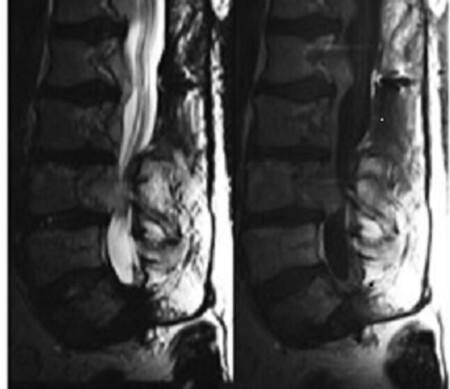
AThere is recurrence of malignancy within the sacrum(2%)
BThere is no recurrence of malignancy(10%)
CThere is intramedullary recurrence in the distal spinal cord and conus(4%)
DThere is epidural recurrence involving the lumbar spine(84%)
Your answerD
Correct answerD. There is epidural recurrence involving the lumbar spine
Vital Concept
Epidural recurrence of resected sacral chordoma is typically multifocal involving the sacral canal with extension into mesorectal space, gluteal muscles, and residual sacrum. Magnetic resonance imaging demonstrates soft tissue masses requiring wide margins for salvage radiotherapy planning due to complex recurrence patterns.
Explanation
There is epidural recurrence involving the lumbar spine
Images demonstrate multiple soft tissue masses involving multiple levels of the lumbar spine, immediately posterior to the posterior vertebral body margins, exerting mass effect on the thecal sac. This is compatible with the recurrence of malignancy. Approximately 1/3 of patients with primary chordomas demonstrate metastatic disease.
Incorrect Answers:
A. The sacrum has been surgically resected; there is no mass-like recurrence.
B. There are epidural masses involving the lumbar spine, compatible with recurrence of malignancy.
C. The nerve roots and conus have a normal appearance and are without expansion or signal abnormality to suggest metastatic involvement.
Vital Concept: Epidural recurrence of resected sacral chordoma is typically multifocal involving the sacral canal with extension into mesorectal space, gluteal muscles, and residual sacrum. Magnetic resonance imaging demonstrates soft tissue masses requiring wide margins for salvage radiotherapy planning due to complex recurrence patterns.
Q2
hard QID 5024
Incorrect
Regarding PET detectors, increasing which of the following parameters would result in a decrease of detector efficiency?
ADetector thickness(24%)
BPhysical density(8%)
CLight conversion efficiency(8%)
DAtomic number (Z)(6%)
ELight decay time(54%)
Your answerA
Correct answerE. Light decay time
Vital Concept
Increased scintillator light decay time causes detector paralysis at high count rates because the detector remains "busy" longer after each event, creating dead time during which new photons cannot be registered. This reduces effective detection efficiency and count rate capability, limiting overall system performance.
Explanation
Light decay time
If the duration of excitation and light emission by the detector material is increased, it is less responsive to further excitations (i.e., it is "paralyzed").
Incorrect Answers:
A, B, and D. An increase in detector thickness, physical density, or atomic number will increase absorption of high-energy photons. This will result in improved detector efficiency.
C. Increasing light conversion efficiency will improve performance by registering a stronger signal per photon absorbed.
Vital Concept: Increased scintillator light decay time causes detector paralysis at high count rates because the detector remains "busy" longer after each event, creating dead time during which new photons cannot be registered. This reduces effective detection efficiency and count rate capability, limiting overall system performance.
Q3
easy QID 3096
Correct
Sonography of the abdomen was done with a representative image as shown below. The contralateral counterpart of the measured structure has a similar appearance. Which of the following is the best diagnosis?
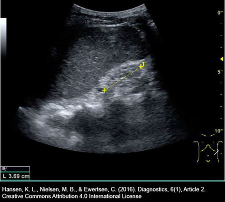
ARenal calculi(1%)
BMedical renal disease(91%)
CHydronephrosis(1%)
DUreterocele(1%)
ENephrocalcinosis(7%)
Your answerB
Correct answerB. Medical renal disease
Vital Concept
Small echogenic kidneys indicate chronic kidney disease with irreversible parenchymal loss, distinguishing chronic from acute kidney injury where kidneys are typically normal-sized or enlarged. This pattern represents end-stage changes from longstanding medical renal disease.
Explanation
Medical renal disease
This is a patient with end-stage chronic renal failure. Ultrasound shows an echogenic kidney with total loss of corticomedullary differentiation. In addition, the kidney appears small and atrophic. These characteristics are matched by the unseen contralateral kidney. Color Doppler (not shown) is diminished in both kidneys in the setting of end-stage chronic renal failure.
Incorrect Answers:
A. There is no sonographic evidence of calculi.
C. There is no evidence of pelvicalyceal dilatation.
D. See explanation above.
E. There is no evidence of nephrocalcinosis.
Vital Concept: Small echogenic kidneys indicate chronic kidney disease with irreversible parenchymal loss, distinguishing chronic from acute kidney injury where kidneys are typically normal-sized or enlarged. This pattern represents end-stage changes from longstanding medical renal disease.
Q4
moderate QID 21557
Correct
A 48-year-old male patient develops severe chest pain and shortness of breath. A CT scan is performed. Which of the following findings on CT strongly predicts the patient's prognosis?
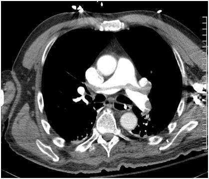
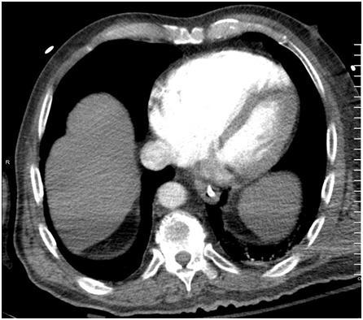
ASaddle embolus(8%)
BThe ratio of ventricular sizes(91%)
CPulmonary consolidation(0%)
DAortic diameter(0%)
EPulmonary artery diameter(1%)
Your answerB
Correct answerB. The ratio of ventricular sizes
Explanation
The ratio of ventricular sizes
The CT study shows a large saddle pulmonary embolism (red arrows). When comparing the sizes of the ventricles, there is prominent dilatation of the right ventricle (blue arrow) when compared to the left ventricle (yellow arrow). Normally, the ratio of ventricular sizes (expressed as RV:LV ratio) should be < 1.0. When the RV:LV ratio is > 1, it is said to represent a strain pattern. Additionally, there is leftward bowing of the interventricular septum, suggestive of a relative increase in right ventricular pressures. In the setting of a large pulmonary embolism as in this case, these are concerning for the presence of right ventricular strain due to pulmonary hypertension related to thromboembolic disease. One other finding of right ventricular strain may include hepatic vein reflux of contrast material. Right ventricular strain is said to be an independent predictor of poorer outcomes in the setting of pulmonary thromboembolic disease, and as such, is the most concerning feature present on this set of images.
Incorrect Answers:
A. While a large saddle embolus is a concerning finding, if the patient is hemodynamically stable, even this may be managed non-operatively with anticoagulation. However, given the presence of strain patterns, a more aggressive approach such as catheter directed thrombolysis or thrombectomy may be considered.
C. Pulmonary consolidation in the setting of pulmonary embolism may suggest pulmonary infarction. However, significant consolidation is not seen in these images.
D. Aortic enlargement may suggest aneurysm in the appropriate setting; however, the aorta is normal in size in this case.
E. Enlargement of the main pulmonary artery to a diameter greater than 30 mm can suggest pulmonary artery hypertension. The pulmonary artery in this case is normal in diameter.
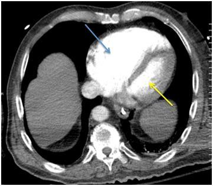
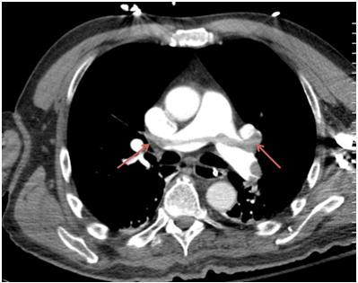
Q5
hard QID 56270
Correct
Which of the following statements regarding reactions to contrast administration is false?
APatients who have had a prior allergic-like reaction or unknown-type reaction (i.e., a reaction of unknown manifestation) to contrast medium have an approximately fivefold increased risk of developing a future allergic-like reaction if exposed to the same class of contrast medium again.(6%)
BIn general, patients with unrelated allergies are at a twofold to threefold increased risk of an allergic-like contrast reaction, but due to the modest increased risk, restricting contrast medium use or premedicating solely on the basis of unrelated allergies is not recommended.(10%)
CA history of asthma does not increase the likelihood of an allergic-like contrast reaction.(51%)
DMale patients have lower reaction rates than female patients.(12%)
EThere is no cross-reactivity between different classes of contrast medium.(21%)
Your answerC
Correct answerC. A history of asthma does not increase the likelihood of an allergic-like contrast reaction.
Vital Concept
The approach to patients about to undergo a contrast-enhanced examination has four general goals:
Explanation
A history of asthma does not increase the likelihood of an allergic-like contrast reaction.
A history of asthma does increase the likelihood of an allergic-like contrast reaction. Patients with asthma may be more prone to develop bronchospasm. Due to the modest increased risk, however, restricting contrast medium use or premedicating solely on the basis of a history of asthma is not recommended.
Incorrect Answers:
A. B. D. E. These are all true statements.
Vital Concept: The approach to patients about to undergo a contrast-enhanced examination has four general goals:
1) To ensure that the administration of contrast is appropriate for the patient and the indication.
2) To balance the likelihood of an adverse event with the benefit of the examination.
3) To promote efficient and accurate diagnosis and treatment.
4) To be prepared to treat a reaction should one occur.
Achieving these aims depends on obtaining an appropriate and adequate history for each patient, considering the risks and benefit of using or avoiding contrast medium, preparing the patient appropriately for the examination, having equipment available to treat reactions, and ensuring that personnel with sufficient expertise are available to treat severe reactions.
The history obtained should focus on identification of factors that may indicate either a contraindication to contrast media use or an increased likelihood of an adverse event. Screening questions should include historical elements that will affect decision-making in the patient selection and preparation period.
Q6
hard QID 18110
Correct
Which of the following is true regarding the vascular anomaly shown here?
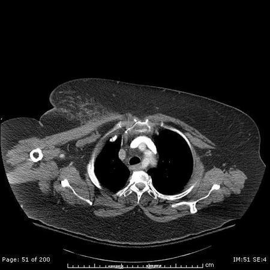
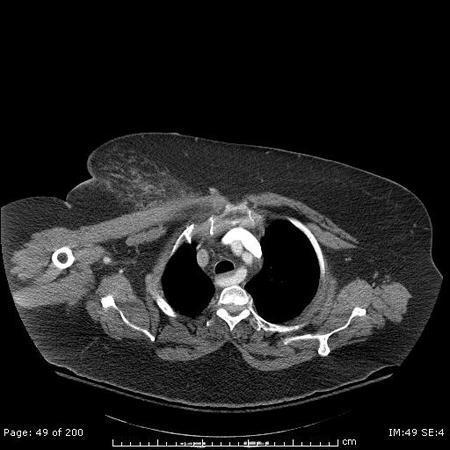
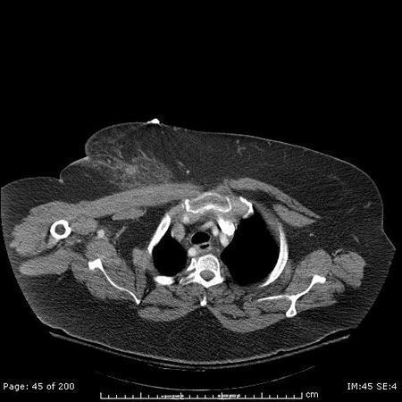
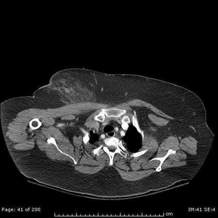
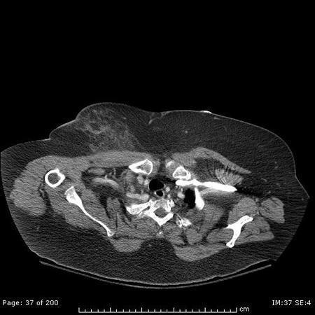
AThis entity is associated with retroesophageal dilation at its origin.(78%)
BThis is the second most common vascular anomaly of the aortic arch.(20%)
CPresents with dysphagia in the majority of cases.(2%)
DVascular ring is associated with this entity when the ligamentum arteriosum is on the same side of the esophagus as the aortic arch.(0%)
Your answerA
Correct answerA. This entity is associated with retroesophageal dilation at its origin.
Vital Concept
Left-sided aortic arch with aberrant right subclavian artery is the most common congenital anomaly of the aortic arch. Associated with Kommerell's diverticulum and vascular ring. Most patients with this entity are asymptomatic, though some can present with dysphagia lusoria.
Explanation
This entity is associated with retroesophageal dilation at its origin.
Left-sided aortic arch with aberrant right subclavian artery commonly present with retroesophageal dilation at its origin, also known as a Kommerell's diverticulum. Given their risk of associated rupture/dissection, proper recognition of this entity in this context is crucial.
Incorrect Answers:
B. Left-sided aortic arch with aberrant right subclavian artery is the most common congenital anomaly of the aortic arch.
C. Most patients are asymptomatic; dysphagia occurs in ~10% of cases (known as dysphagia lusoria).
D. When a vascular ring is present, the ductus arteriosus is expected to be on the contralateral (right) side of the esophagus as related to the left-sided aortic arch.
Vital Concept: Left-sided aortic arch with aberrant right subclavian artery is the most common congenital anomaly of the aortic arch. Associated with Kommerell's diverticulum and vascular ring. Most patients with this entity are asymptomatic, though some can present with dysphagia lusoria.
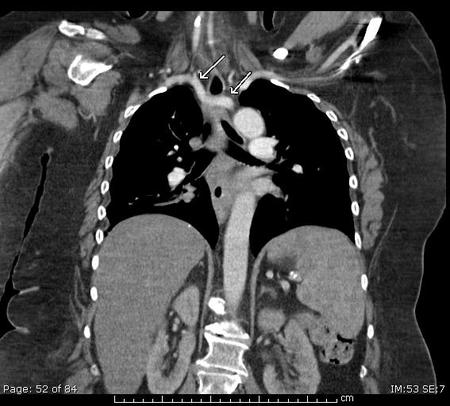
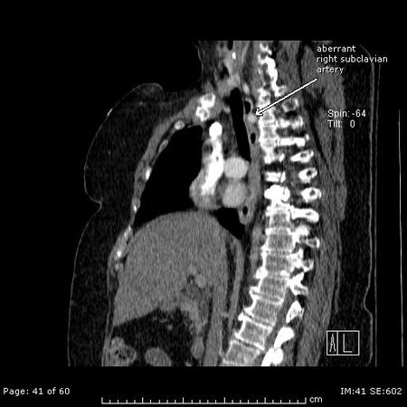
Q7
easy QID 12297
Correct
What is the most likely explanation of the finding(s) on this multiplanar reformation (MPR) positron emission tomography (PET) image?
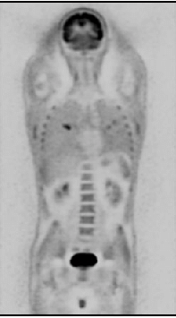
ALeft renal collecting system stone(4%)
BIncreased myocardial activity secondary to cardiomyopathy(1%)
CNon-attenuation corrected image(94%)
DAbnormal increased brain activity(1%)
Your answerC
Correct answerC. Non-attenuation corrected image
Explanation
Non-attenuation corrected image
Any time there is diffuse "uptake" in non-dense tissue such as lungs or the subcutaneous fat (as seen here), suspicion for non-attenuation correction should arise.
PET images also demonstrate a right lung pulmonary lesion. Attenuation correction has been one of the main methodological challenges in the integrated positron emission tomography and magnetic resonance imaging (PET/MRI) field. As a standard transmission or computed tomography approaches are not available in integrated PET/MRI scanners, MR-based attenuation correction approaches had to be developed. Aspects that have to be considered for implementing accurate methods include the need to account for attenuation in bone tissue, normal and pathological lung and the MR hardware present in the PET field-of-view, to reduce the impact of subject motion, to minimize truncation and susceptibility artifacts, and to address issues related to the data acquisition and processing both on the PET and MRI sides.
Incorrect Answers:
A. The focus of increased activity in the left renal collecting system is secondary to physiologic radiotracer accumulation in the left renal pelvis.
B. The myocardial activity is physiologic left ventricular uptake.
D. The brain activity is physiologic.
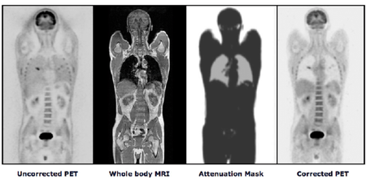
Q8
hard QID 18096
Correct
Which of the following is the most likely diagnosis?
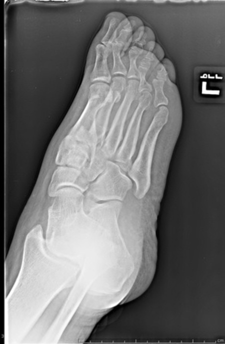
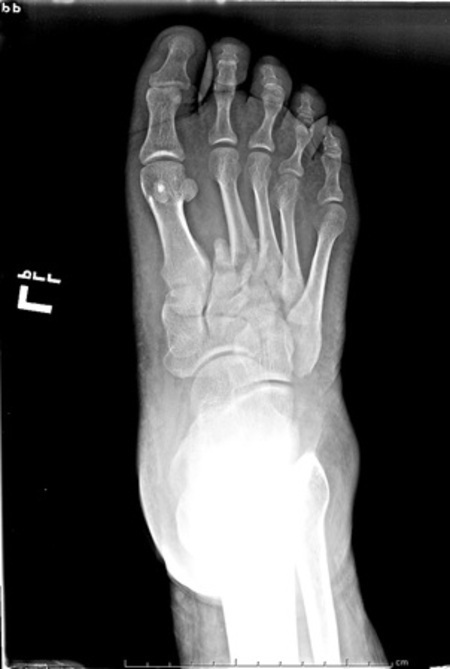
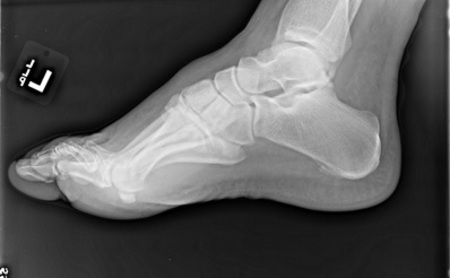
ADivergent Lisfranc fracture(31%)
BHomolateral Lisfranc fracture(63%)
CChopart fracture(6%)
DJones fracture(0%)
Your answerB
Correct answerB. Homolateral Lisfranc fracture
Explanation
Homolateral Lisfranc fracture
In homolateral Lisfranc, there is lateral displacement of the 1st to 5th metatarsals, or lateral dislocation of the 2nd to 5th metatarsals while the 1st tarsometatarsal (TMT) joint remains congruent with the first or medial cuneiform. Partial Lisfranc fracture-dislocations are those that do not involve all five tarsometatarsal articulations.
Incorrect Answers:
A. The normal alignment of the foot on AP radiograph is that the 1st metatarsal should be centered with the first or medial cuneiform, the 2nd metatarsal medial margin should align with the medial margin of the second or middle cuneiform, the 3rd metatarsal lateral margin should align with the lateral margin of the third or lateral cuneiform, and the 5th metatarsal styloid process should extend slightly lateral to the cuboid. The Lisfranc joint is the articulation of the tarsus with the metatarsal bases. The first three metatarsals articulate respectively with the three cuneiforms, and the 4th and 5th metatarsals articulate with the cuboid. The Lisfranc ligament attaches the medial cuneiform to the base of the 2nd metatarsal bone on the plantar aspect of the foot. In divergent Lisfranc fracture there is lateral dislocation of the 2nd to 5th metatarsals with medial dislocation of the 1st metatarsal.
C. A Chopart fracture is a fracture-dislocation of the mid-tarsal joint (Chopart joint) of the foot, the talo-navicular, and calcaneo-cuboid joints. The commonly fractured bones are the calcaneus, cuboid, and navicular.
D. A Jones fracture is a transverse fracture at the base of the fifth metatarsal, 2 cm distal to the proximal tuberosity at the metadiaphyseal junction without distal extension.
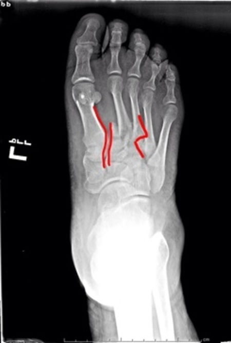
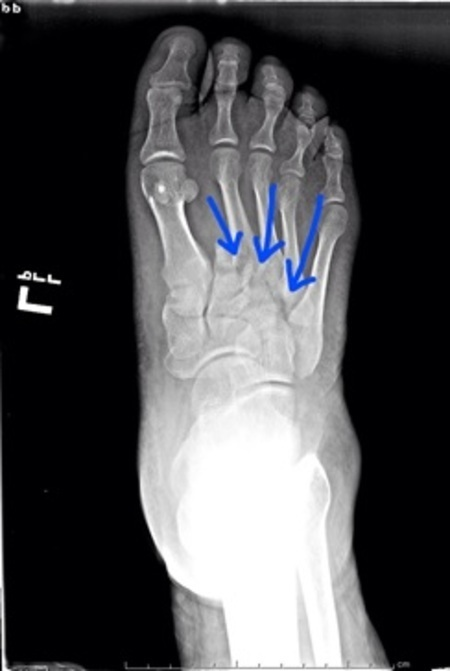
Q9
easy QID 43853
Incorrect
Which of the following is the most likely diagnosis in this 55-year-old male patient with ulnar-sided wrist pain?
The coronal proton density and gradient echo sequences through the wrist show complete disruption of the fovea (red arrows) and styloid (yellow arrows) portions of articular disc of the TFCC, indicative of a complex tear of the TFCC. The TFCC is an important, and complicated, stabilizer of the distal radioulnar joint and provides important shock absorption to the carpus. The components of the TFCC include: the articular disc, the dorsal and volar radioulnar ligaments, the meniscus homologue, the extensor carpi ulnaris tendon sheath, and the ulnocarpal ligaments. Although all of the components of the TFCC are structurally important, from a radiologic and an orthopedic perspective, it is the articular disc and the radioulnar ligaments that are the most important to evaluate. Injuries to the TFCC may be traumatic or degenerative in nature. The ulnar attachments of the TFCC are relatively vascular and amenable to surgical repair, particularly when the tears are traumatic in nature. Thus, MR provides a valuable pre-operative roadmap in cases such as the one presented here.
Incorrect Answers:
A. Isolated fracture of the ulnar styloid is rare and usually the result of direct blunt trauma. Much more often, they are seen as part of distal radius fractures following a fall on an outstretched hand.
C. Ulnar impaction syndrome is seen with ulnar positive variance, in which the ulna abuts the proximal lunate, causing reactive marrow edema and cystic change. These features are not present in this case.
D. Kienbock disease, or avascular necrosis of the lunate, appears on MR as sclerosis (very low T1 and T2 signal). Bone marrow edema may be seen in the acute phase, particularly on the radial side.
E. Extensor carpi ulnaris tenosynovitis is incorrect. Although this tendon and its paratenon (sheath) are part of the TFCC, there is a more pressing and apparent cause of the patient's symptoms in this case.
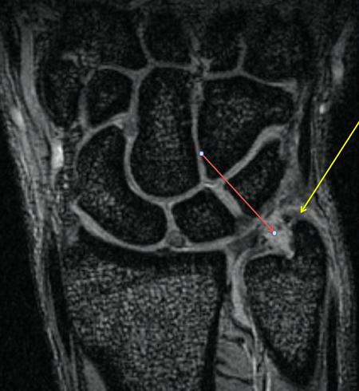
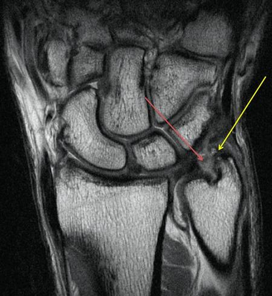
Q10
easy QID 2899
Correct
The artifact shown on the ultrasound image (arrow) is:
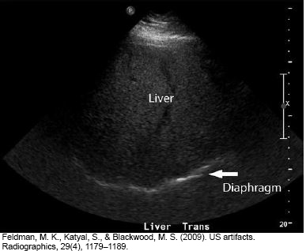
ASide lobe artifact(2%)
BMirror image artifact(8%)
CSpeed displacement artifact(84%)
DReverberation artifact(4%)
EGrating lobe artifact(1%)
Your answerC
Correct answerC. Speed displacement artifact
Vital Concept
The apparent diaphragmatic discontinuity represents boundary distortion from speed displacement—fatty infiltration slows ultrasound transit, causing time-based depth miscalculation that makes the diaphragm appear artificially deeper in fat-affected areas, creating false discontinuity of an actually smooth interface.
Explanation
Speed displacement artifact
The image shows artificial displacement of the posterior liver surface; this can be seen in the setting of hepatic steatosis (favored in this case), particularly when heterogeneous, or deep to an attenuating lesion. This is known as speed displacement artifact. This occurs when the velocity of sound is decreased below the assumed 1540 m/sec due to the attenuating lesion resulting in a delay of the returning echo. The image processor will erroneously place the tissue posterior to the attenuating lesion deeper than it is truly located.
Incorrect Answers:
A. Side lobe artifact is created by detection of low-amplitude ultrasound waves, which project radially from the main beam axis. These detected waves will erroneously place objects outside of the field of view onto the image. This is commonly seen as abnormal signal in anechoic structures such as the urinary bladder or gallbladder.
B. Mirror image artifacts occur when the beam encounters a highly reflective interface. Echoes are reflected from the interface back towards the transducer but then encounter the "back" of a structure, are reflected back to the original reflector and then reflected back to the transducer. This results in a duplicated structure or "mirror image." This commonly occurs at the diaphragm.
D. Reverberation artifact occurs when two parallel highly reflective surfaces repeatedly reflect the beam back and forth before returning to the transducer at different times. These delayed echoes will be shown as multiple linear reflections that are equidistant from each other.
E. Grating lobes are produced in multielement transducers and result from division of the transducer into smaller elements. These off-axis beams are more perpendicular to the main beam axis compared to side lobes. Grating lobe artifacts are similar to side lobe artifacts but occur closer to the transducer.
Vital Concept: The apparent diaphragmatic discontinuity represents boundary distortion from speed displacement—fatty infiltration slows ultrasound transit, causing time-based depth miscalculation that makes the diaphragm appear artificially deeper in fat-affected areas, creating false discontinuity of an actually smooth interface.
Q11
hard QID 37635
Correct
Which of the following correctly states the most likely radiotracer shown in the image below?
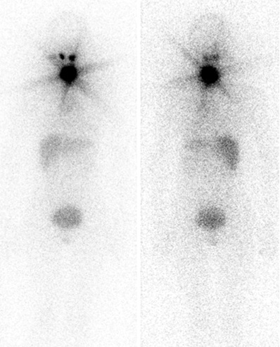
ANa I-123(6%)
BNa I-131(72%)
CTc-99m(2%)
DI-123 MIBG(5%)
EI-131 MIBG(15%)
Your answerB
Correct answerB. Na I-131
Explanation
Na I-131
This whole-body thyroid cancer scan was obtained seven days after high-dose I-131 therapy. The intense uptake in the thyroid bed results in a star artifact (green arrows), which is caused by septal penetration of the high-energy photons through the septa of the collimator. This star artifact appearance is commonly seen when I-131 is imaged.
Liver uptake (blue arrows) is secondary to metabolized thyroid hormone, and excreted tracer is seen in the bladder (red arrows). When imaging the thyroid in nuclear medicine, one may use Na I-123, Na I-131, or Tc-99m.
I-131 is not used for routine thyroid scans because of its poor image quality and high radiation dosimetry (it is a beta emitter). The high-energy beta emissions of I-131 make it very useful for radiotherapy for Graves’ disease, toxic nodules, and thyroid cancer (as in this case). I-131 can also be used for neuroendocrine tumor radioablation. Thyroid blockade with KI is necessary prior to one of these procedures to minimize the risk of thyroid ablation.
Incorrect Answers:
A. C. Na I-123 or Tc-99m can be used to determine the functional status of a thyroid nodule, as well as aid in the differential diagnosis of thyrotoxicosis. Tc-99m has several advantages over Na I-123: faster acquisition time because the allowable dose of Tc-99m administered (5–10 mCi) is considerably higher than that of I-123 (200 –300 microCi); Tc-99m is readily available from molybdenum generators in hospital nuclear laboratories, whereas I-123 capsules are cyclotron-produced and must be ordered in advance. The lower energy photons of Na I-123 and Tc-99m generally do not produce the star artifact seen in the provided image, making this answer choice less likely.
D. E. MIBG (metaiodobenzylguanidine) is a norepinephrine analog that localizes to adrenergic tissue and can be used to localize neuroendocrine tumors (pheochromocytoma and neuroblastoma). One can use the mnemonic MIBG (Myocardium, Liver, Bladder, and salivary glands) to remember its normal biodistribution (which is not seen in this case). Faint uptake can also be seen in brown fat as well. The absence of myocardial uptake in the provided image makes this answer less likely.
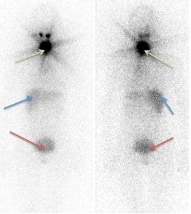
Q12
hard QID 4942
Incorrect
In the United States, the most common cause of the depicted abnormality is:
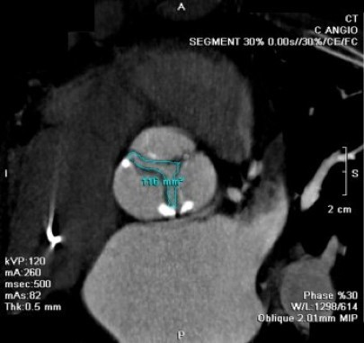
Aage-associated degeneration.(66%)
Bbicuspid valve.(28%)
Crheumatic heart disease.(5%)
DLibman–Sacks endocarditis.(0%)
Ebacterial endocarditis.(1%)
Your answerB
Correct answerA. age-associated degeneration.
Vital Concept
Degenerative calcific disease is the most common cause of aortic stenosis in developed countries. Rheumatic disease is the leading cause in developing countries.
Explanation
age-associated degeneration.
The image shows a planimetry measurement of the aortic valve with a valve orifice of 1.16 cm^2
. This is diagnostic of aortic valve stenosis (AS). The size of a normal valve orifice is 3.0 to 4.0 cm^2
. A valve orifice of <1.0 cm^2
is consistent with severe stenosis and is typically the indication for repair. The most common cause of aortic valve stenosis in the United States is age-associated degeneration of the valve.
Incorrect Answers:
B. Patients with bicuspid valve have a strong predisposition to valve stenosis and typically present at a younger age (<70); however, these patients only make up a small percentage of patients with AS.
C. Worldwide, rheumatic heart disease remains the most common cause.
D. Libman-Sacks endocarditis is associated with systemic lupus and typically does not result in significant valve dysfunction.
E. Bacterial endocarditis is also not a typical cause of valve stenosis.
Vital Concept: Degenerative calcific disease is the most common cause of aortic stenosis in developed countries. Rheumatic disease is the leading cause in developing countries.
Q13
hard QID 21581
Incorrect
A 35-year-old female patient presents with persistent dyspnea and undergoes cardiac MR imaging. Which of the following is the diagnosis?
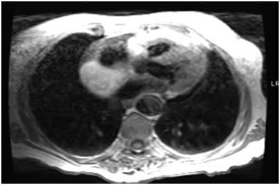
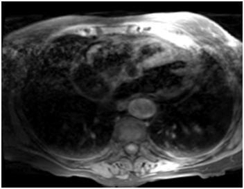
ARight atrial thrombus(2%)
BRight atrial lipoma(63%)
CLipomatous hypertrophy of the interatrial septum(29%)
DRight atrial myxoma(6%)
EViral myocarditis(1%)
Your answerC
Correct answerB. Right atrial lipoma
Vital Concept
Cardiac lipoma on imaging typically presents as an encapsulated mass of adipose tissue that follows fat signal on all sequences, most commonly at the atrial septum, right atrium, and left ventricle.
Explanation
Right atrial lipoma
The typical imaging presentation of a cardiac lipoma is an encapsulated mass of adipose tissue that follows fat signal on all sequences. As such, it is characteristically hyperintense on T1WI (green arrow) and hypointense on fat-saturated sequences (yellow arrow). Convex contours, in this case, suggest the diagnosis. They may produce mass effect and result in decreased filling in the affected cardiac chamber. Additionally, they may be arrhythmogenic. The most common locations are the atrial septum, right atrium, and left ventricle.
Incorrect Answers:
A. Atrial thrombus is suggested by the presence of a non-enhancing smooth filling defect within the atrium, which typically conforms to the atrial wall. Patients with atrial fibrillation are at risk for the development of atrial thrombi due to turbulent/slow flow within the atria related to poor contractility and are often managed with anticoagulant therapy.
C. Lipomatous hypertrophy of the interatrial septum is characterized by nonencapsulated fat deposition within the interatrial septum, producing a dumbbell-shaped fatty lesion that follows fat density on CT and fat signal on MR sequences (hyperintense on T1WI and hypointense on fat-saturated sequences), and spares the area around the fossa ovalis. It is characteristically FDG-avid on FDG-PET imaging.
D. Atrial myxomas often are low-attenuation masses that are frequently attached to the interatrial septum by a thin stalk. They are most commonly located in the left atrium. They are typically highly mobile within the atrium and may prolapse into the mitral valve, producing a ball-valve effect. Occasionally they may have a frond-like appearance. In these cases, they are more likely to result in distal embolic disease, such as stroke.
E. Viral myocarditis typically produces patchy subepicardial and mid-myocardial delayed enhancement on post-contrast imaging of the heart. Fat signal masses are not characteristic of viral myocarditis.
Vital Concept: Cardiac lipoma on imaging typically presents as an encapsulated mass of adipose tissue that follows fat signal on all sequences, most commonly at the atrial septum, right atrium, and left ventricle.
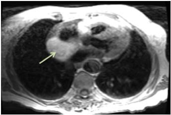
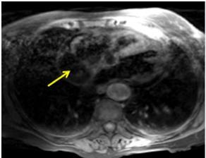
Q14
hard QID 24064
Correct
A carotid ultrasound is performed on a 54-year-old patient with syncope. Images from the proximal ICA. Which of the following is most likely to be associated with these findings?
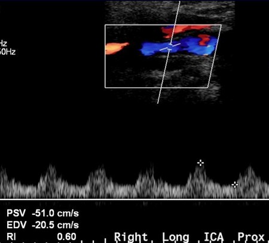
ANormal(15%)
BAtrial fibrillation(1%)
CAtherosclerosis with <50% stenosis of ICA distal from image.(12%)
DAortic stenosis(65%)
E50-69% stenosis of ICA distal to image(8%)
Your answerD
Correct answerD. Aortic stenosis
Vital Concept
Severe aortic stenosis produces characteristic carotid duplex findings of delayed systolic upstroke with blunted amplitude and rounded waveform morphology, termed "pulsus tardus et parvus," while peak systolic velocities remain relatively preserved unless concurrent left ventricular dysfunction is present.
Explanation
Aortic stenosis
The right internal carotid artery (ICA) ultrasound provided shows a tardus (late, as indicated by the gentle upslope - red arrow) and parvus (small, as indicated by the low peak systolic velocity - blue arrow) spectral Doppler waveform. This is indicative of proximal occlusion, making aortic stenosis the best possible choice here, though in the real world the provider would also need an image of the contralateral ICA waveforms.
Incorrect Answers:
A. This is not a normal waveform.
B. Atrial fibrillation would show an irregularly irregular waveform, much like the corresponding ECG.
C, E. For there to be stenosis, the peak systolic velocity would be elevated to up to 125 cm/s in <50% stenosis, and from 125-229 cm/s for 50-69% stenosis. Further, there is no significant plaque or stenosis in the imaged vessel
Vital Concept: Severe aortic stenosis produces characteristic carotid duplex findings of delayed systolic upstroke with blunted amplitude and rounded waveform morphology, termed "pulsus tardus et parvus," while peak systolic velocities remain relatively preserved unless concurrent left ventricular dysfunction is present.
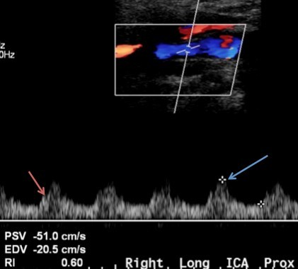
Q15
moderate QID 20593
Incorrect
A 34-year-old female patient presents six weeks postpartum with a breast lump. The ultrasound is seen below. Which of the following is the most likely diagnosis?
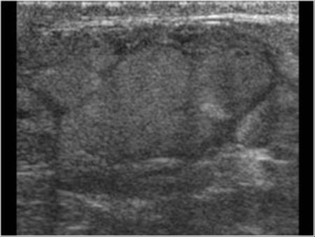
APhyllodes tumor(7%)
BAbscess(1%)
CGalactocele(85%)
DFibrocystic change(4%)
EFat necrosis(2%)
Your answerA
Correct answerC. Galactocele
Explanation
Galactocele
This is a galactocele. It can produce a homogenously increased echogenicity if the milk fat is in suspension, at times appearing solid on ultrasound as in this case. Galactoceles can also appear as cystic or mixed solid/cystic, but usually lack color Doppler flow internally. Though more commonly seen on ML view mammogram, fluid level from the fat content can be seen in the galactocele if the fluid contents are separated.
Incorrect Answers:
A. A phyllodes tumor on ultrasound would most closely mimic the appearance of a fibroadenoma.
B. An abscess of the breast on ultrasound is frequently hypoechoic and multiloculated with lack of vascularity in the lesion.
D. The ultrasound appearance of fibrocystic change would be that of nodular areas with associated fibroglandular tissue.
E. Fat necrosis has a variable appearance ultrasound although can be seen as an anechoic or hypoechoic mass with well-defined margins.
Q16
moderate QID 2904
Correct
Review the MRI sequence diagram. Which of the following is true regarding the 180° RF pulse?
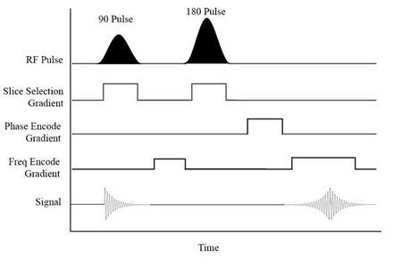
AIs used to suppress selected tissue, such as CSF or fat(14%)
BMinimizes T2* artifact in an image(68%)
CRefocusing is present on gradient recall echo sequences(9%)
DGives spatial localization to the selected slice(4%)
Your answerB
Correct answerB. Minimizes T2* artifact in an image
Vital Concept
The 180° pulse is essential because it reverses dephasing from magnetic field inhomogeneities while preserving true T2 information, enabling the echo formation necessary for spin echo imaging and accurate tissue characterization.
Explanation
Minimizes T2* artifact in an image
You should be familiar with interpreting MRI sequence diagrams. The diagram shows a spin echo sequence. The 180° refocusing pulse is applied after there has been some dephasing of the transverse magnetization, both due to T2 and T2* effects. The purpose is to rephase the spins, which emphasizes the pure T2 effect and minimizes T2* effect. This refocusing is not present on gradient recall echo sequences and is the main reason there are increased T2* effects on GRE. Spatial localization is generally conferred into the selected slice by the frequency and phase gradients.
Incorrect Answers:
A. The 180° refocusing pulse is universal and affects all tissue. CSF/fat suppression techniques are reliant on specialized, tissue-selective mechanisms.
C. The 180° pulse is not present in gradient recall echo sequences.
D. Spatial localization is reliant on the initial 90° pulse, not the 180° pulse.
Vital Concept: The 180° pulse is essential because it reverses dephasing from magnetic field inhomogeneities while preserving true T2 information, enabling the echo formation necessary for spin echo imaging and accurate tissue characterization.
Q17
moderate QID 22615
Correct
A 2-year-old male patient presents for evaluation of increasing palpable flank mass. The ultrasound is typical of which of the following?
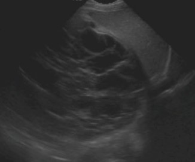
AWilms' tumor(12%)
BNeuroblastoma(5%)
CMesoblastic nephroma(6%)
DNephroblastomatosis(1%)
EPediatric cystic nephroma(77%)
Your answerE
Correct answerE. Pediatric cystic nephroma
Vital Concept
Multilocular cystic nephroma is a cystic renal mass with typical appearance of a large multicystic mass with variably enhancing internal septations. On ultrasounds, cyst contents are usually anechoic, but low-level echoes may be seen, and septal vascularity can also be seen.
Explanation
Pediatric cystic nephroma
The renal ultrasound image shows a complex cystic and solid renal mass (yellow arrow). Multilocular cystic nephroma is a cystic renal mass which, when encountered in the pediatric population, is more common in male patients, but is far more common in the female adult population. In the pediatric population, it is most common between the ages of 3 months to 2 years. The typical appearance is that of a large multicystic mass with variably enhancing internal septations. On ultrasounds, cyst contents are usually anechoic, but low-level echoes may be seen, and septal vascularity can also be seen. They are typically benign masses that are usually treated with surgical resection, which is usually curative. However, the presence of immature elements (metanephric blastema) within the mass can confer the potential for aggressive behavior, leading to a lesion that carries a similar prognosis to that of Wilms' tumor.
Incorrect Answers:
A. Wilms' tumor is a malignant tumor of the primitive metanephric blastema and is the most common abdominal neoplasm in pediatric patients aged 1 to 8 years old, peaking at age 3. It is associated with the deletion of a tumor suppressor gene on chromosome 11. They typically appear as large masses with heterogeneous attenuation and signal on T1- and T2-weighted MR imaging. They enhance heterogeneously and typically have well-defined margins. They tend to cause local mass effect and displace adjacent organs and have a characteristic “claw” of contiguous normal renal tissue, indicating their primary location within the kidney. They calcify less frequently than neuroblastomas. On ultrasound, often Wilms lesions appear to have large hypoechoic areas due to central necrosis and cyst formation. Hyperechoic areas may represent areas of fat, calcification or hemorrhage. It may also appear less commonly as a solid, often rounded, mass. Vessels are displaced rather than encased. Vascular invasion is estimated to occur in approximately 5-10% of cases. US is useful for the assessment of IVC patency. They are associated with certain syndromes, such as Beckwith-Wiedemann syndrome, Denys-Drash syndrome, and WAGR (Wilms' tumor, aniridia, genitourinary anomalies, and intellectual disability). They are treated with a combination of surgical resection, chemotherapy, and radiation.
B. Neuroblastomas are common malignant lesions in the pediatric population and frequently involve the adrenal medulla, retroperitoneum, or mediastinum. They are most commonly encountered in patients less than two years old (in contradistinction to Wilms' tumor, which peaks at age 3). Neuroblastomas are heterogeneous in appearance owing to internal hemorrhage and necrosis, with typical internal calcification. On ultrasound, they appear as solid, heterogeneous masses with calcification, but are rarely cystic. On MR, they are usually hyperintense on T2-weighted imaging and hypointense on T1-weighted imaging with heterogeneous enhancement. In contradistinction to Wilms' tumor, they tend to engulf adjacent vascular structures rather than exerting mass effect upon them. They frequently metastasize to bone and liver. They may be imaged with Tc99m bone scan and MIBG scintigraphy for evaluation of metastatic extent. Staging of neuroblastoma is unique:
Stage 1—tumor confined to initial organ
Stage 2—tumor extends beyond organ but not across midline
Stage 3—tumor crosses midline
Stage 4—distant metastasis
Stage 4S—metastasis to skin, liver, and bone marrow in a patient less than one year of age; this is an important distinction to make, as the survival expectancy in this stage is almost 100% and may spontaneously resolve.
C. Mesoblastic nephroma is a typically benign tumor of neonates composed primarily of fibroblasts. It is best characterized as a unilateral intrarenal solid tumor with variable internal cystic necrosis, hemorrhage, and enhancement in a neonatal patient. Sonographic appearance can vary. Usually, it is a well-defined mass with low-level homogeneous echoes. It may be indistinguishable from Wilms' tumor, but the age of the patient should suggest the diagnosis over Wilms' tumor. They are usually resected surgically, which is typically curative.
D. Nephroblastomatosis is a form of persistent metanephric blastema in pediatric patients. It is characterized as diffuse nephrogenic rests within the renal parenchyma and is typically seen as a homogeneous rind of renal masses that surround the kidney or are dispersed within the renal parenchyma. This rind of tissue tends to enhance to a lesser degree than that seen in the remainder of the normal kidney. Ultrasound may demonstrate hypoechoic nodules. The kidney is usually enlarged, and the enlarged kidney may have diffusely decreased echogenicity. It is most frequently encountered during the period of infancy and may degenerate into Wilms' tumor. Therefore, regular surveillance for increase in size or the development of heterogeneity is important, as this finding could signal conversion to Wilms' tumor.
Vital Concept: Multilocular cystic nephroma is a cystic renal mass with typical appearance of a large multicystic mass with variably enhancing internal septations. On ultrasounds, cyst contents are usually anechoic, but low-level echoes may be seen, and septal vascularity can also be seen.
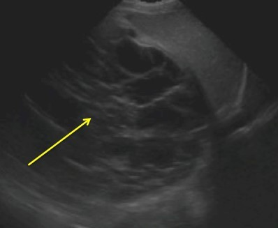
Q18
moderate QID 38046
Correct
Continuing medical education courses and maintenance of certification are examples of commitment to which of the following categories?
AImproving quality of care(1%)
BScientific knowledge(13%)
CProfessional competence(80%)
DAppropriate distribution of finite resources(0%)
EProfessional responsibilities(7%)
Your answerC
Correct answerC. Professional competence
Explanation
Professional competence
The medical profession adheres to fundamental principles and the fulfillment of definitive professional responsibilities. These responsibilities include commitment to professional competence, whereby physicians must be committed to lifelong learning and be responsible for maintaining the medical knowledge and the clinical and team skills necessary for the provision of quality care. This includes continuing medical education and maintenance of certification.
Incorrect Answers:
A. Commitment to improving quality of care. Physicians must be dedicated to continuous improvement in the quality of health care. This commitment entails not only maintaining clinical competence but also working collaboratively with other professionals to reduce medical errors, increase patient safety, minimize overuse of health care resources, and optimize the outcomes of care. Physicians must actively participate in the development of better measures of quality of care and the application of quality measures to routinely assess the performance of all individuals, institutions, and systems responsible for health care delivery.
B. Commitment to scientific knowledge. Much of medicine’s contract with society is based on the integrity and appropriate use of scientific knowledge and technology. Physicians have a duty to uphold scientific standards, to promote research, and to create new knowledge and ensure its appropriate use. The profession is responsible for the integrity of this knowledge, which is based on scientific evidence and physician experience.
D. Commitment to a just distribution of finite resources. While meeting the needs of individual patients, physicians are required to provide healthcare that is based on the wise and cost-effective management of limited clinical resources. They should be committed to working with other physicians, hospitals, and payers to develop guidelines for cost-effective care.
E. Commitment to professional responsibilities. As members of a profession, physicians are expected to work collaboratively to maximize patient care, be respectful of one another, and participate in the processes of self-regulation, including remediation and discipline of members who have failed to meet professional standards. The profession should also define and organize the educational and standard-setting process for current and future members.
Q19
easy QID 48471
Correct
A 57-year-old female patient presents with back pain and a history of breast cancer. Which of the following is the most likely diagnosis?
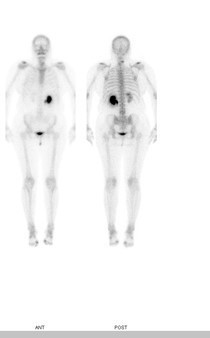
AObstructing nephrolithiasis(97%)
BDiffuse metastasis (superscan)(2%)
CComplex regional pain syndrome(0%)
DOsteoporotic compression fracture(0%)
Your answerA
Correct answerA. Obstructing nephrolithiasis
Vital Concept
Obstructive hydronephrosis on bone scintigraphy can manifest as either diffusely increased uptake (due to tracer retention from impaired drainage) or diffusely decreased uptake (from severely compromised renal function), requiring correlation with anatomic imaging for definitive diagnosis.
Explanation
Obstructing nephrolithiasis
The bone scan demonstrates left-sided hydronephrosis, with increased radiotracer accumulation in the left collecting system compared to the right. This delayed nephrogram is likely secondary to obstruction by a calculus in a patient with back pain and hydronephrosis.
Incorrect Answers:
B. A metastatic superscan tends to have uptake throughout the axial skeleton and proximal appendicular skeleton, often somewhat heterogeneous. In contrast, a metabolic superscan tends to be more uniform and involves both the axial and more peripheral skeleton, including the distal extremities, calvarium, and mandible.
C. The three-phase bone scan (TPBS) is one of the widely used imaging studies for the diagnosis of CRPS. Typical CRPS-1 shows increased blood flow, pool, and delayed periarticular uptake in affected limbs on TPBS. However, there is still some controversy regarding the TPBS image criteria for CRPS-1.
D. The diagnosis of a new fracture in osteoporotic vertebral fractures requires simple X-ray and supplementary studies such as bone scan and MRI. A careful interpretation of multiple osteoporotic vertebral fracture patients is necessary in regards to hot uptake lesions of bone scan.
Vital Concept: Obstructive hydronephrosis on bone scintigraphy can manifest as either diffusely increased uptake (due to tracer retention from impaired drainage) or diffusely decreased uptake (from severely compromised renal function), requiring correlation with anatomic imaging for definitive diagnosis.
Q20
hard QID 56255
Correct
A 35-year-old male patient presents with a headache, and a CT of the head is obtained in the emergency department. Which of the following is best depicted on the axial head CT image below?
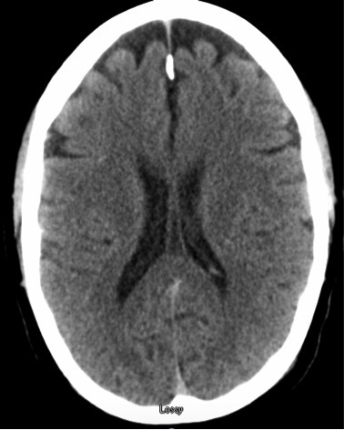
ACavum septum pellucidum(26%)
BCavum vergae(45%)
CCavum velum interpositi(19%)
DColloid cyst(9%)
Your answerB
Correct answerB. Cavum vergae
Vital Concept
Cavum vergae is the cerebrospinal fluid space posterior to the forniceal columns that normally closes before birth. When persistent, it's usually seen with cavum septum pellucidum and is considered a normal variant. It must be distinguished from cavum velum interpositum, which lies below the fornix rather than posterior to it.
Explanation
Cavum vergae
The arrow marks a CSF density space between the bodies of the lateral ventricles, limited posteriorly by the splenium of the corpus callosum. At this axial level, cavum vergae is the best choice of those given. This finding is often contiguous with a cavum septum pellucidum anteriorly. When combined, these can present with a more rectangular shape.
Incorrect Answers:
A. Cavum septum pellucidum is a CSF density area between the frontal horns of the lateral ventricles. This case appears most consistent with cavum vergae; an associated cavum septum pellucidum is not definitively seen (but is likely also present).
C. Cavum velum interpositi is more commonly seen at the axial level of the atria of the lateral ventricles. This image is above that level and would be more fitting of another diagnosis.
D. Colloid cyst usually presents in the third ventricle, more inferior to this level, and tend to be hyperattenuating. The third ventricle is not depicted in this image, and a different diagnosis should be considered.
Vital Concept: Cavum vergae is the cerebrospinal fluid space posterior to the forniceal columns that normally closes before birth. When persistent, it's usually seen with cavum septum pellucidum and is considered a normal variant. It must be distinguished from cavum velum interpositum, which lies below the fornix rather than posterior to it.
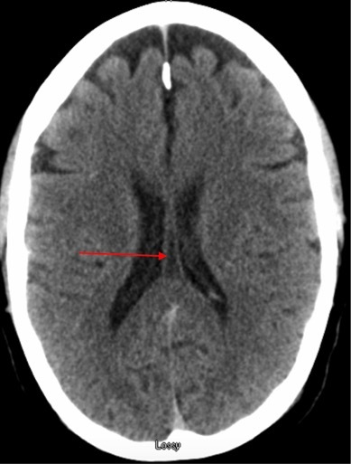
Q21
hard QID 86101
Correct
A 63-year-old patient is undergoing follow-up imaging of a solitary pulmonary nodule. When reviewing the computed tomography of the patient's chest, which of the following characteristics would be most concerning for malignancy?
AA lesion with irregular margins(79%)
BA lesion with a doubling time of 36 months(17%)
CA solid lesion(3%)
DA calcified lesion(1%)
Your answerA
Correct answerA. A lesion with irregular margins
Vital Concept
Characteristics of a pulmonary nodule associated with a greater likelihood of malignancy include spiculated or irregular margins, semi-solid composition, slow doubling time, and an absence of calcifications.
Explanation
A lesion with irregular margins
A solitary pulmonary nodule is a round or oval opacity smaller than 3 cm, entirely surrounded by pulmonary parenchyma, and not associated with adenopathy, atelectasis, or pneumonia. Pulmonary nodules are often discovered incidentally and may represent early malignancy.
Neoplasia cannot be predicted with certainty, but certain features are more commonly associated with malignancy. Nodule margins are a vital prognosticator, as those lesions with irregular or spiculated margins are more likely to be malignant than those with smooth or polygonal borders. While up to 21% of malignant nodules may have well-defined margins, this finding is still more concerning than a subsolid lesion, as discussed below. See an example of a concerning lung nodule in the left lower lobe on computed tomography (CT) scan below.
Incorrect Answers:
B. Doubling time is the time it takes for the lesion to double in volume. Lesions with very short doubling times (less than 4 weeks) or long doubling times (greater than 529 days) are less likely to be malignant. Conversely, lesions with very rapid doubling times are more likely to be infectious or inflammatory. The median volume doubling time is 529 days for lung adenocarcinomas, according to recent studies.
C. Solid lesions are more likely to be benign. Subsolid lesions, with both a solid and ground glass component, are more correlated with malignancy. According to one study, the incidence of malignancy in subsolid lesions was about 34% compared to solid nodules, where it was estimated as only 7%. Adenocarcinoma is thought to begin as atypical hyperplasia, which appears as a pure ground-glass opacity, and may progress to in situ and eventually invasive carcinoma, acquiring solid components.
D. Calcifications are generally considered a benign feature, with approximately 90% of calcified lung nodules being benign.
Vital Concept: Characteristics of a pulmonary nodule associated with a greater likelihood of malignancy include spiculated or irregular margins, semi-solid composition, slow doubling time, and an absence of calcifications.
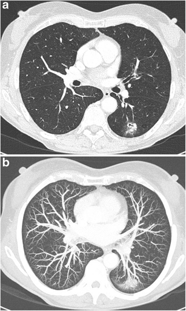
Q22
moderate QID 47081
Correct
A 28-year-old female patient undergoes an abdominal CT because of right upper quadrant pain. Which of the following is the diagnosis?
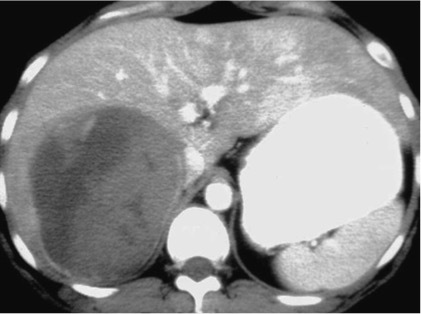
AHepatic adenoma(90%)
BFocal nodular hyperplasia(1%)
CHepatocellular carcinoma(0%)
DFibrolamellar hepatocellular carcinoma(5%)
EHemangioma(4%)
Your answerA
Correct answerA. Hepatic adenoma
Vital Concept
Hepatocellular adenomas appear heterogeneous on CT due to intrinsic components including microscopic fat, hemorrhage or blood products, and structural features that vary by molecular subtype.
Explanation
Hepatic adenoma
The contrast-enhanced CT shows an encapsulated (blue arrow) mass with intratumoral hemorrhage (red arrow) and heterogeneously enhancing mass (yellow arrow). Given these findings in a young female patient, the most likely diagnosis is hepatic adenoma. They represent rare benign hepatic neoplasm most frequently seen in the setting of use of hormonally active drugs and medications, including oral contraceptives and anabolic steroids.
Incorrect Answers:
B. Focal nodular hyperplasia is often referred to as the stealth lesion. It appears as isodense or hypodense to normal liver on noncontrast exams. There is transient, intense, homogeneous arterial phase enhancement, which on the portal venous phase, is isodense to background liver. A unique feature is a central scar, most apparent on delayed phase imaging (due to fibrous tissue).
C. Hepatocellular carcinoma is characterized by a heterogeneous mass with arterial hyperenhancement with subsequent washout on delayed imaging. Intratumoral hemorrhage and lipids are frequently present. They are often seen in the setting of background liver cirrhosis.
D. Fibrolamellar hepatocellular carcinoma is a rare malignancy seen in young adults, as opposed to typical HCC, which is present in cirrhosis. They most often appear on CT as there is a heterogeneous mass with a well-defined contour and hypoenhancing central scar. The scar enhances less often, compared to FNH. Further nodal metastases are frequently present (greater than 50% of cases).
E. A hemangioma is a benign liver lesion of vascular (thought to be venous) etiology. They have characteristic enhancements including incomplete peripheral nodular enhancement on the arterial phase of imaging, with progressive centripetal fill-in on the portal venous and delayed phases.
Vital Concept: Hepatocellular adenomas appear heterogeneous on CT due to intrinsic components including microscopic fat, hemorrhage or blood products, and structural features that vary by molecular subtype.
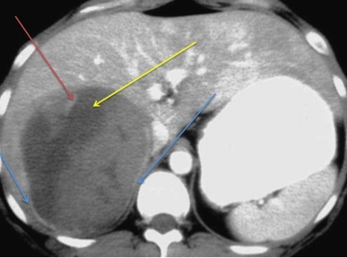
Q23
easy QID 37553
Correct
What combination will result in the lowest dose?
AAn extremely dense breast compressed to 5 cm(2%)
BA heterogeneously dense breast compressed to 3 cm(1%)
CA breast of scattered fibroglandular density compressed to 5 cm(3%)
DA breast that is almost entirely fat compressed to 3 cm(95%)
Your answerD
Correct answerD. A breast that is almost entirely fat compressed to 3 cm
Explanation
A breast that is almost entirely fat compressed to 3 cm
Absorbed dose in mammography is a function of many factors, two of which are breast density and breast thickness. Glandular tissue has a higher density than adipose. Thus, for breasts of the same thickness, more glandular breasts will require a higher phototimed mAs. The result will be a higher dose. Concomitantly, the thicker the breast, the higher the phototimed mAs of the X-ray tube. At the same time, generally, the less dense the breast, the more readily compressible it is. So breasts that are almost entirely fat will be more compressible than breasts that are extremely dense given the same thickness. Taking all this into account, less dense breasts that are more compressed will result in the lowest dose.
Incorrect Answers:
A. The highest dose will be in a more dense breast that is less compressed.
B and C. These choices will have doses between these choices.
Q24
hard QID 38106
Incorrect
A 56-year-old female patient with back pain in the setting of breast cancer undergoes the following study for staging. Which of the following is the radiotracer depicted?
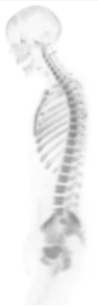
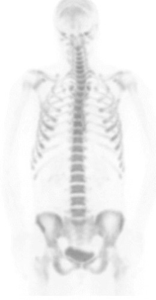
ATc99m- MDP(29%)
BF18 - NaF(68%)
CGa67 - citrate(1%)
DIn111 - octreotide(0%)
EF18 - deoxyglucose(2%)
Your answerA
Correct answerB. F18 - NaF
Explanation
F18 - NaF
Metastases to bone are a common source of malignancy in the skeleton, and they occur much more frequently than primary bone tumors. Of all primary neoplasms, breast and prostate cancer are most likely to metastasize to bone. The image shown is of a bone PET performed with sodium fluoride labeled with fluorine 18 (B, 18F-NaF).
Incorrect Answers:
A. The biodistribution is similar to that of Tc99m-MDP. However, the uptake of 18F-NaF in bone is higher, providing superior bone-to-background ratios. 18F-NaF has minimal binding to serum proteins, which allows a rapid single-pass extraction and fast clearance from the soft tissues. Compared with 99mTc-MDP, the bone uptake of 18F-NaF is twice as great.
Note that there little soft tissue uptake, whereas a Tc99m-MDP study would have some in the kidneys and elsewhere (blue arrows). For comparison, a Tc99m-MDP bone scan is provided (note the soft tissue uptake – green arrows). Note also that the resolution is better on the PET study.
This greater bone uptake and the faster soft-tissue clearance lead to shorter 18F-NaF imaging times, as well as increased bone-to-background ratios for 18F ions, a finding that improves the diagnostic accuracy. The total examination time for 18F-NaF PET/CT is overall shorter, compared with that for 99mTc-MDP bone imaging. The shorter examination time decreases the potential for patient motion artifacts and improves work-flow productivity.
C. Gallium-67 citrate is a radiotracer that can be imaged with gamma camera, SPECT, camera or hybrid machines. It is thought to function as an iron analogue that binds to various inflammatory proteins and is taken up by, among other cells, macrophages. It thus has a predilection for sites of inflammation and granuloma formation. It is used in cases of localization of the source of fever of unknown origin, sarcoidosis, tuberculosis, and other inflammatory processes. Its biodistribution includes the liver (site of highest uptake), bone marrow, spleen, and salivary glands.
D. In111 – octreotide is a somatostatin analog used in the assessment of neuroendocrine tumors. Its biodistribution includes the liver, spleen, thyroid, kidneys, bladder, and occasionally the bowel.
E. F18 – deoxyglucose (FDG) is a glucose analog used heavily in oncologic imaging in PET CT. It is not a bone-specific agent, and along with bony lesions will localize to other sites of increased metabolic activity in metastatic cancer. Its normal biodistribution includes the brain, liver, bowel, bladder, bone marrow, and myocardium, depending on degree of the fasted state.
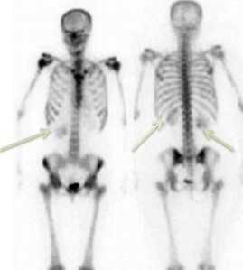
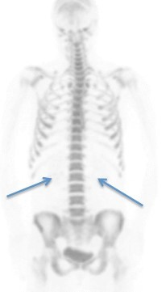
Q25
hard QID 18079
Correct
The radiologist notes early gallbladder activity (not shown here) after intravenous injection of the isotope. What is the mechanism of action of the radiopharmaceutical used in this study?
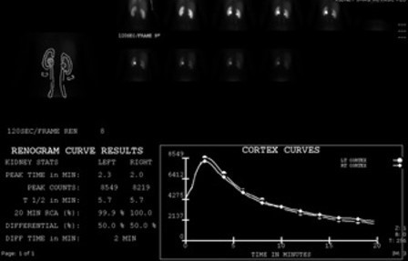
AGlomerular filtration(22%)
BTubular secretion(69%)
CTubular binding(8%)
DTubular reabsorption(2%)
Your answerB
Correct answerB. Tubular secretion
Vital Concept
MAG3 is cleared by proximal tubular secretion (95%) for measuring effective renal plasma flow, while DTPA is cleared by glomerular filtration for measuring GFR. MAG3 is superior in decreased kidney function because tubular secretion is often preserved when glomerular filtration is impaired.
Explanation
Tubular secretion
The isotope used in this renal scan is Technetium-99m-labeled mercaptoacetyltriglycine or Tc99m-MAG3. This isotope is protein-bound and is cleared predominantly by the proximal tubules with minimal glomerular filtration. Around 10% of 99mTc-MAG3 is known to be cleared through the hepatobiliary system and can affect the interpretation of the study. The uptake in the gallbladder should be a clue that MAG3 is being used in this study, as it produces better quality images than DTPA. It can also be used to evaluate ERPF (effective renal plasma flow).
Incorrect Answers:
A. Technetium-99m-labeled diethylenetriamine pentaacetic acid or Tc99m-DTPA is cleared predominantly by glomerular filtration. It can be used to evaluate GFR.
C. Tubular binding describes the mechanism of action of isotopes used for renal cortical imaging such as Tc99m DMSA or Tc99m glucoheptonate.
D. None of the renal agents work by tubular reabsorption.
Vital Concept: MAG3 is cleared by proximal tubular secretion (95%) for measuring effective renal plasma flow, while DTPA is cleared by glomerular filtration for measuring GFR. MAG3 is superior in decreased kidney function because tubular secretion is often preserved when glomerular filtration is impaired.
Q26
QID 20799
Incorrect
A 17-year-old male patient presents with upper extremity paresthesia and neck pain. The image below was obtained. No other intracranial or spinal abnormalities were apparent on additional imaging (not shown). Which of the following is the most likely diagnosis?
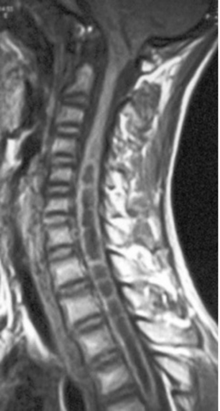
ADandy-Walker malformation(1%)
BNormal congenital variant(7%)
CChiari 1 malformation(81%)
DChiari 2 malformation(9%)
EChiari 3 malformation(2%)
Your answerD
Correct answerC. Chiari 1 malformation
Explanation
Chiari 1 malformation
Sagittal T1-weighted magnetic resonance imaging (MRI) shown demonstrates low-lying cerebellar tonsils extending 1 to 2 cm below foramen magnum (arrow) and cystic intramedullary structure central in the cervicothoracic spinal cord. These findings constitute a Chiari 1 malformation with resultant syrinx.
Patients are often asymptomatic (up to 50%), but headaches and symptoms of cervical spinal cord compression are common. Suboccipital craniotomy has proven successful in symptomatic patients.
Incorrect Answers:
A. Like the correct answer, Dandy-Walker malformation (DWM) is a congenital abnormality of the posterior fossa. However, DWM involves a large posterior fossa cyst in communication with the fourth ventricle, agenesis of the cerebellar vermis, and torcular-lambdoid inversion, none of which are seen in this case.
B. Low-lying cerebellar tonsils can be a normal variant in asymptomatic patients if cerebellar descent is less than 5 mm below the foramen magnum. In the images shown, there is an extension of cerebellar tonsils 1 to 2 cm below the foramen magnum (arrow) and a resultant syrinx (arrowheads), making a normal variant unlikely.
D. Chiari 2 malformation (a.k.a. Arnold-Chiari malformation) does involve a small posterior fossa with inferior herniation of the hindbrain, as seen in this case. In addition to tonsillar ectopia, however, Chiari 2 essentially always involves a neural tube defect (usually lumbar myelomeningocele), tectal beaking, and a towering appearance of the cerebellum, which appears to wrap around the midbrain. The absence of these findings makes Chiari 2 less likely.
E. In addition to the features of Chiari 2 malformation (described above), Chiari 3 malformation involves the presence of a cervico-occipital myeloencephalocele. The absence of these features excludes Chiari 3 as the correct diagnosis.
Q27
hard QID 43641
Incorrect
Which of the following is the most likely diagnosis in this 55-year-old patient?
ASchwannoma(13%)
BMeningioma(46%)
CParaganglioma(32%)
DDehiscent jugular bulb(7%)
EMetastatic disease(3%)
Your answerE
Correct answerB. Meningioma
Explanation
Meningioma
The images provided show a mass (red arrow) within the jugular foramen with a broad-based dural tail (green arrow) and non-aggressive bony remodeling (yellow arrow). These are features most characteristic of a jugular foramen meningioma.
Incorrect Answers:
A. Schwannoma may have a similar appearance and tends to have a more fusiform or dumbbell-shaped appearance, as opposed to the broad-based dural tail seen here.
C. Paraganglioma has a similar appearance. A characteristic feature is a salt-and-pepper appearance secondary to flow voids in these highly vascular tumors.
D. A dehiscent jugular bulb is a normal venous variant characterized by superior and lateral extension of the jugular bulb into the middle ear cavity through a dehiscent sigmoid (jugular) plate. No soft tissue mass or bony change would be present.
E. Metastatic disease of the skull base is a less likely differential consideration. Bone metastasis tends to have a more aggressive appearance. If an associated soft tissue mass is seen, it would be less well-defined and less homogenous.
Q28
QID 44027
Incorrect
A 45-year-old male patient who has alcohol use disorder was brought into the emergency department following fluid resuscitation in the field by emergency medical service. Which of the following is the earliest imaging finding in this process?
ARestricted diffusion(63%)
BT2 signal abnormality(36%)
CT1 signal abnormality(1%)
DContrast enhancement(0%)
EBlooming artifact(0%)
Your answerB
Correct answerA. Restricted diffusion
Vital Concept
Central pontine myelinolysis is earliest visualized on diffusion-weighted imaging (DWI), which shows hyperintense lesions before FLAIR, gadolinium enhancement, or T2-weighted changes appear.
Explanation
Restricted diffusion
The axial MR shows increased signal in the pons (blue arrow), with sparing of the peripheral fibers and cortical spinal tracts (yellow arrows). Given the imaging features and clinical history, a diagnosis of osmotic demyelination syndrome should be suspected. Osmotic demyelination syndrome, formerly central pontine myelinolysis, refers to acute demyelination in the setting of osmotic changes, typically the rapid correction of hyponatremia. The earliest change is seen on DWI with restriction in the lower pons. This appears within 24 hours of the onset of symptoms.
Incorrect Answers:
B. and C. This same region will eventually demonstrate high T2 signal and later, low T1 signal. The T1 and T2 changes may take up to two weeks to develop.
D. Typically, there is no enhancement, although it has been occasionally reported. This is felt to be similar in the acute demyelinating phase of multiple sclerosis. The peripheral fibers and corticospinal tracts are typically spared.
E. Blooming artifact is not present.
Vital Concept: Central pontine myelinolysis is earliest visualized on diffusion-weighted imaging (DWI), which shows hyperintense lesions before FLAIR, gadolinium enhancement, or T2-weighted changes appear.
Q29
hard QID 2889
Correct
A 44-year-old female presented for evaluation complaining of diffuse abdominal pain. An ultrasound of the abdomen was performed and the following image was obtained. Which of the following radiographic properties of the structure displayed is pivotal to making the correct diagnosis?
ARing down artifact(10%)
BDirty shadowing(10%)
CClean shadowing(73%)
DReverberation artifact(7%)
Your answerC
Correct answerC. Clean shadowing
Vital Concept
Clean posterior acoustic shadowing is essential for gallstone diagnosis on ultrasound—without it, the diagnosis of cholelithiasis cannot be confidently made, regardless of how echogenic a structure appears.
Explanation
Clean shadowing
Clean posterior acoustic shadowing (as seen in this case) is the definitive ultrasound sign that confirms a structure is a gallstone rather than another gallbladder abnormality. This occurs universally regardless of stone composition, making it a reliable diagnostic feature. The "clean" aspect indicates shadowing that is complete and well-defined, extends throughout the far-field beyond the stone.
Incorrect Answers:
A. Ring down artifact occurs most frequently due to gas, and it has been shown that multiple bubbles of gas are required to produce this artifact. When the pulse from the transducer reaches gas bubbles, it excites the fluid trapped between the bubbles themselves and causes the fluid to resonate. The resonating fluid results in a continuous sound wave following the original echo back to the transducer, which is then interpreted as having originated from reflectors deep to the gas. This results in a series of bright echoes deep to the gas.
B. Dirty shadowing occurs with gas or multiple small reflectors (as in the case of gallbladder sludge) that scatter sound in various directions, creating an ill-defined shadow with internal echoes. This suggests air-containing structures (like bowel gas) rather than solid stones, leading to misdiagnosis if accepted as evidence of cholelithiasis.
D. Comet tail artifact is a type of reverberation that is seen in adenomyomatosis, related to the presence/structure of cholesterol crystals.
Vital Concept: Clean posterior acoustic shadowing is essential for gallstone diagnosis on ultrasound—without it, the diagnosis of cholelithiasis cannot be confidently made, regardless of how echogenic a structure appears.
Q30
moderate QID 47098
Correct
Which of the following is true regarding the abnormality shown below?
AIt has a female predilection(8%)
BDiabetes mellitus is a known association(84%)
CA sonographic Murphy sign is typically present(2%)
DIt can be managed conservatively(4%)
EMorbidity and mortality are low(2%)
Your answerB
Correct answerB. Diabetes mellitus is a known association
Vital Concept
Emphysematous cholecystitis on ultrasound shows hyperechoic reverberation artifacts with dirty acoustic shadowing from intramural gas, commonly occurring in diabetic patients and often misinterpreted as gallstones or porcelain gallbladder.
Explanation
Diabetes mellitus is a known association
The sonographic images of the gallbladder demonstrate numerous echogenic reflectors (red arrows) with low-level posterior “dirty” shadowing (green arrow) and reverberation artifact (orange arrow) within the gallbladder wall secondary to the presence of gas. Additionally, there are pneumobilia (blue arrows). These are consistent with a diagnosis of emphysematous cholecystitis. The majority of patients are older adults and have underlying diabetes mellitus.
Incorrect Answers:
A. Men are affected twice as commonly as women, in contrast to most cases of acute cholecystitis.
C. Although these patients are quite sick, often presenting with sepsis and peritoneal signs, up to two-thirds have been reported to have an absence of a sonographic Murphy sign. This is thought to be secondary to denervation of the gallbladder wall.
D. and E. Emphysematous cholecystitis represents a severely complicated variant of acute gallbladder disease caused by gas-forming organisms (e.g., Clostridium or Escherichia coli). There is a high morbidity and significant risk for increased mortality. As such, it is considered a surgical emergency.
Vital Concept: Emphysematous cholecystitis on ultrasound shows hyperechoic reverberation artifacts with dirty acoustic shadowing from intramural gas, commonly occurring in diabetic patients and often misinterpreted as gallstones or porcelain gallbladder.
Q31
moderate QID 63872
Correct
There is an increased risk for which of the following when the finding indicated by the arrow is present in an intrauterine gestational sac?
AMiscarriage(85%)
BEctopic pregnancy(1%)
CTwin gestation(3%)
DFetal anomalies(12%)
Your answerA
Correct answerA. Miscarriage
Explanation
Miscarriage
This is a chorionic bump and is associated with an increased miscarriage rate, as much as twice the average rate.
Incorrect Answers:
B. Ectopic pregnancy should not be considered in this intrauterine pregnancy.
C. This does not resemble a second gestational sac or fetus.
D. There is no association between chorionic bump and fetal anomalies.
Q32
hard QID 63869
Correct
What genetic aberrancy, when coupled with increased nuchal translucency thickness, intrauterine growth retardation, overlapping of fingers, and congenital heart defects, is most closely associated with the sonographic abnormality shown?
ATrisomy 13(11%)
BTrisomy 18(53%)
CTrisomy 21(33%)
DTurner syndrome(3%)
Your answerB
Correct answerB. Trisomy 18
Explanation
Trisomy 18
The image shows bilateral choroid plexus cysts. Bilateral and persistent cysts are associated with Trisomy 18.
Choroid cysts have been associated with Trisomy 21 in the past, but studies have shown that they occur in Trisomy 21 at the same frequency as in the general population.
Incorrect Answers:
A. Fetuses with trisomy 13 may show holoprosencephaly, midfacial hypoplasia, ventriculomegaly, enlarged cistern magna, microcephaly, or agenesis of the corpus callosum. They may also have a cleft lip or palate, microphthalmia, hypotelorism, nuchal thickening or hydropichygroma and neural tube defects (NTD).
One may also detect omphalocele, kidney and urogenital anomalies, hyperechogenic bowel, cardial echogenic foci, cardiac defects, single umbilical artery (SUA), radial aplasia, polydactyly and flexion deformity of the fingers.
C. Ultrasound examination of a fetus with trisomy 21 generally reveals normal amniotic fluid, normal placentation, and normal fetal growth. In addition, other chromosomal abnormalities have many of the same sonographic findings as Down syndrome, and many findings have a large overlap with phenotypically normal fetuses.
D. Turner syndrome may be suspected in pregnancy during a routine ultrasound scan if problems with the heart or kidney are detected. Lymphedema may be detected sonographically in fetuses with Turner syndrome.
Q33
moderate QID 24107
Incorrect
A provider is performing an aspiration for a complicated cyst. Which of the following aspirates would the provider send for cytology?
ASerous fluid(5%)
BGreen fluid(3%)
CMilk-colored fluid(1%)
DBlood-tinged fluid(89%)
Your answerC
Correct answerD. Blood-tinged fluid
Vital Concept
Aspirated breast cyst fluid should be sent for cytology only if bloody or if specifically requested by the patient, as cloudy yellow or green fluid has high false-positive rates and should not be routinely tested.
Explanation
Blood-tinged fluid
Cysts are very common benign entities and can be simple or complicated. A complicated cyst, as seen here, has internal echoes (yellow arrow).
Complicated cysts can present a diagnostic uncertainty and should be aspirated. The fluid is typically discarded, unless it is bloody, very dark such as degraded blood products, or purulent. Since drainage may cause the provider to lose the landmark of a possible malignant lesion, if a blood aspirate is encountered the provider should consider clip placement and biopsy as well.
Incorrect Answers:
A. B. C. As discussed above, these would not be concerning for cystic aspirate.
Vital Concept: Aspirated breast cyst fluid should be sent for cytology only if bloody or if specifically requested by the patient, as cloudy yellow or green fluid has high false-positive rates and should not be routinely tested.
Q34
hard QID 24489
Incorrect
Which of the following is the appropriate mechanism to test for Mo-99 contamination in Tc-99 samples?
ADose calibrator(59%)
BGeiger counter(2%)
CThin-layer chromatography(23%)
DColorimeter(4%)
EProportionality chamber(12%)
Your answerE
Correct answerA. Dose calibrator
Vital Concept
Molybdenum-99 breakthrough from technetium-99m generators must not exceed 0.15 μCi Mo-99 per mCi Tc-99m for human administration, requiring routine quality control testing and NRC reporting if limits are exceeded.
Explanation
Dose calibrator
This is an example of radionuclide purity and is therefore done with a dose calibrator. The sample is placed in a calibrated lead pig, which shields the 140 keV photons of Tc-99 and permits the ~700 keV photons of Mo-99 to escape. The sample is then measured without the lead pig and the ratio is calculated.
Incorrect Answers:
B. Geiger-Müller counters are not useful in the presence of large amounts of radioactivity. They are good for detecting low levels of activity and are widely used as area survey meters and area monitors. Thus, they are valuable in detecting radiation contamination.
C. Thin-layer chromatography is used to test for radiochemical purity, such as detecting the presence of free Tc in Tc-99 MDP.
D. Colorimetry is used to test for chemical impurities, such as for aluminum within a Tc-99 MDP sample.
E. Proportionality chambers are devices mainly used in research to measure alpha and beta particle radiation.
Vital Concept: Molybdenum-99 breakthrough from technetium-99m generators must not exceed 0.15 μCi Mo-99 per mCi Tc-99m for human administration, requiring routine quality control testing and NRC reporting if limits are exceeded.
Q35
hard QID 18052
Incorrect
A 31-year-old male patient presents with colicky abdominal pain. Which of the following is the most likely diagnosis?
Acute appendicitis is an acute inflammation of the vermiform appendix. Ultrasound is the first line imaging modality in young patients due to its lack of ionizing radiation. Aperistaltic, noncompressible, dilated appendix (> 6mm) are the most common findings on ultrasound. Hyperechoic intraluminal appendicolith may accompany. Periappendicial fat stranding and fluid exist due to inflammation. In case of perforation, it is called complicated appendicitis.
Explanation
Acute, uncomplicated appendicitis
Findings of acute appendicitis are a thickened, dilated (outer diameter greater than 6 mm), noncompressible appendix that may demonstrate hyperemia on Doppler sonography. An appendicolith, if present, is also supportive. An appendicolith may appear as an echogenic shadowing structure within the appendiceal lumen. Inflammatory changes may be seen surrounding the appendix including increased echogenicity of the surrounding fat. The caliper deep to the appendix in the right sided image is on the non-compressed external iliac artery, next to the compressed external iliac vein. The non-compressed vein can be seen in the left image.
An uncomplicated case of appendicitis shows no evidence of perforation (no periappendiceal fluid or abscess). This case would be managed operatively. Also, note that the classic history of periumbilical pain migrating to the right lower quadrant is not always present.
Incorrect Answers:
A. Sonographic findings of renal stones on ultrasound may include the finding of an echogenic focus at the ureterovesical junction which may demonstrate "twinkle" artifact on Doppler sonography and lack of an ipsilateral urine "jet."
B. Typhlitis is a type of neutropenic colitis most commonly seen at the cecum of an immunocompromised patient. This is a diagnosis most often made on CT with pericecal fat stranding and thickening of the cecal wall. Urgent treatment is necessary, as it can lead to perforation and may be fatal in this patient population.
D. Acute, complicated appendicitis would include the findings described above, with the addition of a periappendiceal fluid collection or abscess, indicating perforation. This finding often necessitates percutaneous drainage and antibiotic therapy prior to surgical treatment.
Vital Concept: Acute appendicitis is an acute inflammation of the vermiform appendix. Ultrasound is the first line imaging modality in young patients due to its lack of ionizing radiation. Aperistaltic, noncompressible, dilated appendix (> 6mm) are the most common findings on ultrasound. Hyperechoic intraluminal appendicolith may accompany. Periappendicial fat stranding and fluid exist due to inflammation. In case of perforation, it is called complicated appendicitis.
Q36
easy QID 56279
Correct
A 57-year-old diabetic male patient presents to their primary care physician’s office with swelling/erythema of the left foot and ulceration of the plantar aspect of the first toe. The physician suspects osteomyelitis. Which of the following is the most appropriate initial imaging study?
ARadiographs(92%)
BCT scan(0%)
CMRI(7%)
DNuclear medicine bone scan(0%)
EUltrasound(0%)
Your answerA
Correct answerA. Radiographs
Vital Concept
Plain film radiography is the initial imaging modality for suspected osteomyelitis but requires substantial bone destruction before changes are visible. Magnetic resonance imaging is the gold standard with high sensitivity, determining infection extent, and distinguishing soft tissue from bone involvement.
Explanation
Radiographs
Radiographs are the recommended initial imaging modality when screening for osteomyelitis. If there are positive radiographic findings such as periosteal reaction and erosion, treatment is instituted based upon these findings. If the radiographs are negative and osteomyelitis is still suspected, further imaging such as MRI is advised.
Incorrect Answers:
B. CT is not routinely recommended for the evaluation of osteomyelitis. CT has very limited resolution of the soft tissues and bone marrow, both of which are crucial in the imaging evaluation of osteomyelitis.
C. MRI is not an appropriate initial screening modality in the evaluation of osteomyelitis, due to cost and limited availability. MRI is often obtained following equivocal radiographs or for purposes of preoperative planning.
D. Nuclear medicine bone scan, prior to MRI, was considered the preferred imaging modality in the evaluation of osteomyelitis. However, MRI provides more detailed information such as extent of osteomyelitis, presence or absence of ulceration and necrotic soft tissue, presence or absence of abscess, and presence or absence of associated soft tissue infection such as septic arthritis, septic tenosynovitis and myositis.
E. Ultrasound is not routinely recommended for the evaluation of osteomyelitis due to lack of visualization of the bone (sound waves are completely reflected by the bone surface).
Vital Concept: Plain film radiography is the initial imaging modality for suspected osteomyelitis but requires substantial bone destruction before changes are visible. Magnetic resonance imaging is the gold standard with high sensitivity, determining infection extent, and distinguishing soft tissue from bone involvement.
Q37
easy QID 39318
Correct
Before consenting to an image-guided biopsy, a patient asks their interventional radiologist about the safety of the procedure. The radiologist dismisses the patient’s questions and urges them to agree to the biopsy. Which of the following Fundamental Principles of Professionalism has the radiologist most likely violated?
APatient autonomy(96%)
BPatient welfare(3%)
CPracticality(0%)
DSocial justice(0%)
ESubordination(0%)
Your answerA
Correct answerA. Patient autonomy
Explanation
Patient autonomy
The radiologist is refusing to provide appropriate medical information to the patient, which prevents the patient from making an informed medical decision. The principle of patient autonomy is based on empowering patients to make informed decisions about their treatment. Physicians must take great care to allow patients’ decisions to dictate their treatment plan, as long as those decisions are in keeping with ethical practice and do not lead to demands for inappropriate care.
Incorrect Answers:
B. The primacy of patient welfare is based on physicians dedicating their service to patients, without compromising to market forces, societal pressures, or administrative exigencies. The primacy of patient welfare contributes to the trust that is central to the physician-patient relationship.
C. Practicality is not a principle of professionalism, although physicians make practical decisions in their practice daily. While physicians may be forced to compromise on some issues, they should never compromise the quality of care they provide to patients.
D. The principle of social justice is based on the fair distribution of resources and the elimination of discrimination within the health care field. Promoting social justice is not only an altruistic act, but it also promotes trust between physicians and the communities they serve.
E. Subordination is not a principle of professionalism, although physicians do have an obligation to follow their superiors’ instructions. When these instructions jeopardize patient safety or other ethical principles, physicians have a professional and ethical responsibility to combat such instructions.
Q38
easy QID 43749
Correct
The arrow indicates which of the following structures?
AScutum(2%)
BMalleus(2%)
CCochlear promontory(88%)
DTegmen tympani(4%)
ETympanic segment of the facial nerve(3%)
Your answerC
Correct answerC. Cochlear promontory
Explanation
Cochlear promontory
Knowledge of the complex anatomy of the inner ear is useful in arriving at a diagnosis or appropriate differential diagnosis, as many processes are anatomically confined. The cochlear promontory is a rounded hollow prominence, formed by the projection outward of the first turn of the cochlea. This is the site of glomus tympanic paragangliomas.
Incorrect Answers:
A. The scutum is a sharp bony spur that is formed by the superior wall of the external auditory canal and the lateral wall of the tympanic cavity (yellow arrow). It is usually the first bony structure to be eroded by the enlarging cholesteatoma.
B. The malleus is one of the ossicles of the middle ear (orange arrow). It has been described as having the appearance of ice cream sitting on a cone (the incus), on coronal section.
D. The roof of the tympanic cavity is formed by a thin plate of bone, the tegmen tympani (blue arrow), which separates the cranial and tympanic cavities.
E. The tympanic segment of the facial nerve is indicated by the purple arrow.
Q39
moderate QID 5060
Correct
A patient presented with a history of cough and the following CT was obtained. Which condition does the patient likely have?
ALong history of smoking(4%)
BHistory of asbestos exposure(2%)
CExposure to birds(8%)
DHistory of an extrathoracic malignancy(3%)
EConstipation(83%)
Your answerE
Correct answerE. Constipation
Vital Concept
Lipoid pneumonia is a form of pneumonia associated with oily or lipid components within the pneumonitis component. This can result from aspiration of oily substances (exogenous lipoid pneumonia) or endogenous accumulation of lipid substances in the alveoli (endogenous lipoid pneumonia).
Explanation
Constipation
CT demonstrates bilateral lower lobe consolidations, both demonstrating fat attenuation on soft tissue windows. This is compatible with lipoid pneumonia. Lipoid pneumonia can arise from exogenous or endogenous sources; given the involvement of the bilateral lower lobes, aspiration of mineral oil (commonly taken for constipation) is the most likely cause of lipoid pneumonia of those given.
Incorrect Answers:
A. Smoking affects the lungs in numerous ways, including smoking related-interstitial lung diseases, acute eosinophilic pneumonia, combined pulmonary fibrosis and emphysema, neoplasms, lung cancer, tracheal tumors, chronic obstructive pulmonary disease.
B. Asbestosis refers to later development of diffuse interstitial fibrosis secondary to asbestos fiber inhalation.
C. Bird fancier lung refers to a type of hypersensitivity pneumonitis occurring as a response to avian antigens (usually inhaled proteins in the dust of bird feathers and droppings).
D. Pulmonary metastases are common and the result of metastatic spread from a variety of primary tumors via blood or lymphatics. No extra-thoracic malignancy is described in this case.
Vital Concept: Lipoid pneumonia is a form of pneumonia associated with oily or lipid components within the pneumonitis component. This can result from aspiration of oily substances (exogenous lipoid pneumonia) or endogenous accumulation of lipid substances in the alveoli (endogenous lipoid pneumonia).
Q40
easy QID 43703
Correct
The patient below is exhibiting proptosis, diplopia, and headache. These symptoms are most likely secondary to which diagnosis?
AAllergic fungal sinusitis(3%)
BSinonasal mucocele(93%)
CSinonasal polyposis(2%)
DInverted papilloma(2%)
ESquamous cell carcinoma(0%)
Your answerB
Correct answerB. Sinonasal mucocele
Explanation
Sinonasal mucocele
The non-contrast T1-weighted MR shows a hyperintense opacified expanded left frontal sinus (red arrow) with smooth bony remodeling of walls (blue arrows), which, along with the clinical symptoms, is suggestive of sinonasal mucocele. Note that there is a smaller, low-signal (fluid) mucocele on the right (green arrow). Following contrast administration there is thin peripheral enhancement (orange arrows) of both lesions, without a solid enhancing component.
Mucoceles are the most common expansile lesion of paranasal sinuses. They may be seen in any age group, and occur secondary to obstruction from inflammation, trauma, functional endoscopic sinus surgery, or any space-occupying sinonasal mass. They are characterized by an opacified, expanded sinus with thin peripheral enhancement and smooth remodeling of walls. They are seen most often in the frontal sinus, followed by the ethmoid, maxillary, and sphenoid sinuses. The MR signal characteristics vary based on the fluid and protein content of the mass. High fluid content of mucous yields a low T1 signal, whereas protein content results in a high T1 signal. When the bony remodeling results in mass effect on orbital structures, proptosis and diplopia can be present, as in this case.
Incorrect Answers:
A. Allergic fungal sinusitis is a severe form of chronic recurrent sinusitis with production of eosinophilic mucin containing noninvasive fungal hyphae. The MR signal varies depending on the content of the material, as in mucocele. However, usually there is more signal heterogeneity than seen here secondary to debris, as well as a thicker rind of enhancement. The ethmoid sinus is the most common location, followed by the maxillary, frontal, and sphenoid sinuses. Multifocal sinus involvement is the often seen.
C. Sinonasal polyposis refers to nonneoplastic, inflammatory swelling of sinonasal mucosa that buckles to form polyps. The process involves multiple sinuses and the nasal cavity, and is characterized by mucin production with a high water content, typically yielding high T2 and low T1 signals. They are located predominantly along the lateral nasal wall (near middle meatus) and roof of nasal cavity and ethmoids, and often are not as expansile as the lesion seen in this case.
D and E. Inverted papilloma and squamous cell carcinoma are both solid masses, and would be expected to show internal contrast enhancement. A convoluted, cerebriform pattern is distinctive of inverted papilloma. One would expect an overall aggressive appearance in squamous cell carcinoma.
Q41
moderate QID 20810
Correct
A 34-year-old female patient presents for workup of chronic headache. What is commonly associated with the finding demonstrated?
AVascular nidus(5%)
BArteriovenous fistula(3%)
CDisorganized capillaries(9%)
DCavernous malformation(82%)
EPort wine stain(1%)
Your answerD
Correct answerD. Cavernous malformation
Explanation
Cavernous malformation
The finding demonstrated represents a developmental venous anomaly (DVA)( blue arrows), which terminates in a medusa head configuration (green arrows). This is frequently associated with a cavernous malformation (cavernoma). Cavernous malformations are essentially a hamartoma of immature vascular channels and are themselves benign. However, they may frequently hemorrhage and can be a source of hemorrhagic complications. They are characterized as mulberry or popcorn lesions with internal hemorrhage of varying stages and frequently demonstrate internal or peripheral low-intensity susceptibility artifacts on gradient echo sequences. They are frequently associated with developmental venous anomalies (DVA), which are composed of a medusa head or umbrella-shaped collection of abnormal venous structures centrally within the white matter with an associated draining vein that terminates in a dural venous sinus.
Incorrect Answers:
A. A vascular nidus would be expected in the presence of an arteriovenous malformation (AVM), which is a high-flow lesion composed of an abnormal connection between arterial and venous structures without an intervening capillary bed, and with an associated disorganized nidus of vascular tissue. Frequently, there are grossly enlarged enhancing arterial and venous structures with associated flow-voids.
B. Arteriovenous fistula (AVF) is frequently seen as an abnormal single connection between arterial and venous structures and may be related to a history of trauma. Similarly, it is a high-flow lesion with multiple enlarged arterial and venous structures associated with vascular flow-voids.
C. Disorganized capillaries may be seen in the setting of capillary telangiectasia, which is a slow-flow lesion often only seen on post-contrast sequences as an ill-defined region of enhancement. These are frequently asymptomatic and without consequence. A common location is in the ventral pons.
E. Port wine stain is a facial angiomatous physical exam finding seen in patients with Sturge-Weber syndrome. MR findings of Sturge-Weber syndrome include ipsilateral cortical volume loss, tram-track calcification, and enhancing pial angiomatosis.
Q42
moderate QID 2876
Correct
The pediatrician requests imaging due to a palpable swelling in the abdomen of a 19-month-old child. Which of the following does the computed tomography (CT) scan below demonstrate?
ANeuroblastoma(10%)
BWaterhouse-Friderichsen syndrome(0%)
CWilm’s tumor(89%)
DPolycystic kidney disease(0%)
EPheochromocytoma(0%)
Your answerC
Correct answerC. Wilm’s tumor
Vital Concept
The combination of claw sign confirming renal origin, appropriate age demographics, and characteristic heterogeneous enhancement pattern creates the classic presentation of Wilms' tumor, the most common primary renal malignancy in children and the most frequent cause of renal masses in the pediatric population.
Explanation
Wilm’s tumor
Wilms' tumor is a renal malignancy that occurs in children. They can grow to a large size and are palpable on abdominal exam.
Wilms' tumors are the most common pediatric renal mass, accounting for over 85% of cases and accounts for 7% of all childhood cancers. It typically occurs in early childhood (1 to 11 years) with peak incidence between 3 and 4 years of age. Approximately 80% of these tumors are found before the age of 5 years. When part of a syndrome, they occur even earlier, typically between 2 and 24 months of age 1.
There is no recognized gender predilection, however, presentation is a little later in females. The vast majority are unilateral, with less than 5 % occurring bilaterally.
Incorrect Answers:
A. Neuroblastoma originates in adrenal gland commonly, not kidney. Here one can see the claw sign of the renal parenchyma stretched around the mass.
B. Waterhouse-Friderichsen causes adrenal infarction in the setting of gram-negative sepsis.
D. The lesion in this case appears to be comprised of heterogeneously enhancing soft tissues. Specifically, there are no cystic-appearing lesions within the kidneys; as such, polycystic kidney disease is not the best answer here.
E. Pheochromocytomas produce dramatic spikes in blood pressure, but the image points to another diagnosis.
Vital Concept: The combination of claw sign confirming renal origin, appropriate age demographics, and characteristic heterogeneous enhancement pattern creates the classic presentation of Wilms' tumor, the most common primary renal malignancy in children and the most frequent cause of renal masses in the pediatric population.
Q43
hard QID 21556
Correct
A 64-year-old female patient with history of atrial fibrillation presents with worsening shortness of breath. Which of the following is the most likely diagnosis?
APulmonary embolus(2%)
BMyocardial infarction(0%)
CLeft atrial thrombus(77%)
DPapillary fibroelastoma(6%)
Your answerC
Correct answerC. Left atrial thrombus
Vital Concept
Another key differential is an atrial myxoma. Atrial myxomas often are low-attenuation masses which are frequently attached to the interatrial septum by a thin stalk. They are most commonly located in the left atrium. They are typically highly mobile within the atrium and may prolapse into the mitral valve, producing a ball-valve effect. Occasionally they may have a frond-like appearance. In these cases, they are more likely to result in distal embolic disease, such as stroke.
Explanation
Left atrial thrombus
The smooth left atrial filling defect (yellow arrow) with smooth extension into the right upper pulmonary vein (seen on the coronal view – blue arrow) is suggestive of the presence of atrial thrombus. Patients with atrial fibrillation are at risk for the development of atrial thrombi due to turbulent/slow flow within the atria related to poor contractility, and as such, are often managed with anticoagulant therapy. While it is difficult to exclude an underlying mass on this examination, the configuration of the filling defect is most in keeping with a thrombus.
Incorrect Answers:
A. The thrombus is located within the left atrium. There is no evidence of pulmonary arterial thromboembolic disease.
C. This is not a myocardial perfusion study and as such is poorly sensitive for the detection of myocardial infarction. While chronic infarction may be suggested on CT examination in the setting of marked thinning of the myocardium, the best test for detection of infarction is either nuclear medicine or MR perfusion imaging.
D. Papillary fibroelastomas are typically small, highly mobile tumors arising from cardiac valves. They are so small and mobile that they are unlikely to be visualized on cross-sectional techniques due to limitations in temporal resolution. Frequently, they require ultrasound for visualization. It is important to remember that they are also prone to the development of distal embolic phenomena.
Vital Concept: Another key differential is an atrial myxoma. Atrial myxomas often are low-attenuation masses which are frequently attached to the interatrial septum by a thin stalk. They are most commonly located in the left atrium. They are typically highly mobile within the atrium and may prolapse into the mitral valve, producing a ball-valve effect. Occasionally they may have a frond-like appearance. In these cases, they are more likely to result in distal embolic disease, such as stroke.
Q44
hard QID 46852
Incorrect
A 71-year-old male patient with one month of increasing postprandial abdominal pain undergoes the below abdominal CT. Which of the following statements is accurate regarding the correct diagnosis?
AIt is one of the less common causes of mesenteric ischemia.(55%)
BThe rate of bowel infarction is high.(23%)
CAnticoagulation therapy is rarely required.(2%)
DHypercoagulable states and pancreatitis are very rare causes.(3%)
ESymptoms typically include severe sudden onset, abdominal pain and hematochezia.(16%)
Your answerB
Correct answerA. It is one of the less common causes of mesenteric ischemia.
Vital Concept
Mesenteric venous thrombosis is an uncommon but important cause of bowel ischemia, representing a small fraction of acute abdominal surgical cases but requiring high clinical suspicion due to its nonspecific presentation and high mortality if missed.
Explanation
It is one of the less common causes of mesenteric ischemia.
Mesenteric vein thrombosis is not nearly as common as arterial thrombosis, accounting for only 5 to 15% of all cases of acute mesenteric ischemia.
Incorrect Answers:
B. If untreated, it can lead to bowel ischemia, although small bowel infarction and necrosis does not often occur, presumably due to persistent arterial supply and some venous drainage via collaterals. The mortality rate is approximately 18% from the SMV alone and climbs to 76% when the portal vein is also involved.
C. Bowel infarction obligates surgical resection, but firstline therapy is anticoagulation. IV thrombolysis may be undertaken from several approaches. Infusion catheters have been introduced into the superior mesenteric vein at the time of bowel resection via a percutaneous transhepatic route (as in this case) or via a transjugular route. An alternative route of treatment is via the superior mesenteric artery.
D. Common underlying causes include hypercoagulable states and pancreatitis.
E. Acute superior mesenteric vein thrombosis typically presents vague diffuse colicky abdominal pain (often postprandial) and distention. Heme-positive stool may or may not be present. Severe sudden onset abdominal pain and hematochezia are seen in arterial occlusion.
Vital Concept: Mesenteric venous thrombosis is an uncommon but important cause of bowel ischemia, representing a small fraction of acute abdominal surgical cases but requiring high clinical suspicion due to its nonspecific presentation and high mortality if missed.
Q45
moderate QID 2885
Incorrect
Which of the following statements is most accurate regarding digital radiography, computed radiography, and film screen radiography?
ADigital radiography has less dynamic range than film screen radiography.(4%)
BComputed radiography has greater radiation exposure than film screen radiography.(9%)
CDigital radiography has less detective quantum efficiency (DQE) than film screen radiography.(6%)
DFilm screen radiography has greater spatial resolution than computed radiography.(77%)
Your answerD
Correct answerD. Film screen radiography has greater spatial resolution than computed radiography.
Vital Concept
Film screen radiography records information through continuous analog processes without discrete sampling limitations, while CR systems are fundamentally constrained by digital sampling via laser spot size—creating an insurmountable physical barrier to fine spatial resolution that cannot be overcome regardless of phosphor technology improvements.
Explanation
Film screen radiography has greater spatial resolution than computed radiography.
The superior spatial resolution of screen-film (2.5 to 15 lpm) compared to CR (2.5 to 5 lpm) results from CR's laser readout process. The helium-neon laser beam spot size (approximately 100 microns) during plate scanning creates a fundamental sampling limitation where details smaller than the laser spot cannot be individually resolved. Additionally, screen-film uses smaller silver halide crystals (1 to 3 microns) compared to CR's larger barium fluorohalide crystals, and CR suffers from light spread during photostimulated luminescence collection.
Incorrect answers:
A. Film screen has an S-shaped curve with 1:40 dynamic range, while digital detectors have linear response with 1:100 to 1:1000 range, allowing superior imaging of high-contrast areas.
B. Computed radiography phosphor plates are 2 to 4 times more efficient than film screens, requiring lower radiation doses for equivalent image quality.
C. Digital systems achieve approximately 60% DQE compared to film screen's approximate 30% DQE, meaning more efficient x-ray photon conversion with less noise.
Vital Concept: Film screen radiography records information through continuous analog processes without discrete sampling limitations, while CR systems are fundamentally constrained by digital sampling via laser spot size—creating an insurmountable physical barrier to fine spatial resolution that cannot be overcome regardless of phosphor technology improvements.
Q46
hard QID 48954
Correct
Which one of the following would improve the lateral resolution in ultrasound?
AReducing spatial pulse length(18%)
BIncreasing number of focal zones(60%)
CTurning off harmonic imaging(9%)
DImaging in the far (Fraunhoffer) zone only(12%)
Your answerB
Correct answerB. Increasing number of focal zones
Vital Concept
Increasing the number of focal zones improves lateral resolution over a greater depth range but reduces frame rate since multiple transmit pulses are required.
Explanation
Increasing number of focal zones
Lateral resolution is the ability to discern two closely spaced objects perpendicular to the beam as separate. The beam diameter varies with distance, and lateral resolution is depth dependent (unlike axial resolution, which is not). Lateral resolution depends on transducer element width, and increasing transducer focusing (increasing number of focal zones) can be implemented to maintain lateral resolution as a function of depth. There is generally a decreased frame rate and overall temporal resolution when the number of focal zones increases.
Incorrect Answers:
A. Reducing spatial pulse length increases the axial resolution.
C. Turning off harmonic imaging may be useful in situations in which you are examining deep tissue in difficult-to-image patients.
D. Imaging in the far zone only would focus on higher frequencies. Imaging this area only would not improve resolution.
Vital Concept: Increasing the number of focal zones improves lateral resolution over a greater depth range but reduces frame rate since multiple transmit pulses are required.
Q47
QID 2726
Incorrect
Concerning truncus arteriosus, which of the following other congenital cardiac anomalies is most likely to be present?
AVentricular septal defect(59%)
BMirror image right aortic arch(24%)
CDiGeorge syndrome(3%)
DSecundum-type atrial septal defect(14%)
Your answerB
Correct answerA. Ventricular septal defect
Vital Concept
Truncus arteriosus most commonly presents with a subarterial ventricular septal defect.
Explanation
Ventricular septal defect
Truncus arteriosus refers to a common vessel arising from the heart that gives rise to the aorta, the pulmonary artery, and the coronary arteries. It results from the failure of separation of the conal truncus during embryologic development. It is almost always associated with a ventricular septal defect (VSD).
Incorrect Answers:
B. Right-sided aortic arch is seen in up to nearly one-third of patients with truncus arteriosus; this is a much less common association than VSD.
C. DiGeorge syndrome is a noncardiac anomaly associated with truncus arteriosus. This is also less common than VSD in the setting of truncus arteriosus.
D. A secundum-type atrial septal defect may be seen but this choice is less likely as the VSD is almost always present in truncus arteriosus.
Vital Concept: Truncus arteriosus most commonly presents with a subarterial ventricular septal defect.
Q48
moderate QID 44034
Correct
A 35-year-old female patient undergoes a pelvic MR as part of an infertility workup. Which of the following is the diagnosis?
ASeptate uterus(9%)
BArcuate uterus(84%)
CBicornuate unicollis uterus(5%)
DUterus didelphys(0%)
EUnicornuate uterus(1%)
Your answerB
Correct answerB. Arcuate uterus
Vital Concept
Arcuate uterus demonstrates internal fundal indentation less than 1 cm with an angle greater than 90°, and recent classifications group it with normal uterus rather than as a separate müllerian duct anomaly.
Explanation
Arcuate uterus
The axial MR demonstrates mild focal thickening of fundal myometrium, which has a smooth, broad appearance with a minor indentation on the endometrial cavity. Note that the external uterine contour is not indented (green arrow).
Incorrect Answers:
A. Septate uterus is the primary differential consideration. This entity appears as a septum separating the uterine cavity at its upper portion. The lower portion of the septum is often fibrous. However, the entire septum may be fibrous. In a septate uterus, the fundus is usually flat or convex rather than with a fundal cleft, and the angle between the cornuae is characteristically less than 75°.
C. Bicornuate uterus is characterized as two uterine horns that communicate inferiorly. The fundal cleft between the two uterine horns is at least 1 cm deep, and the uterine horns should form an angle greater than 105°. If there is a single cervix, it is classified as bicornuate unicollis. If there are two cervices, it is classified as bicornuate bicollis. Coronal and axial T2 weighted images will demonstrate two separate cervices.
D. Uterus didelphys is characterized as a complete uterine duplication. Here, there are two uterine horns divided by a deep cleft, two cervices, and frequently, a complete vaginal septum.
E. Unicornuate uterus is characterized as aplasia or hypoplasia of one uterine horn.
Vital Concept: Arcuate uterus demonstrates internal fundal indentation less than 1 cm with an angle greater than 90°, and recent classifications group it with normal uterus rather than as a separate müllerian duct anomaly.
Q49
hard QID 38135
Incorrect
Liver ultrasounds from two different patients affected by the same entity are shown below. Which of the following is true regarding the pathophysiology of the fatty sparing?
ADistortion of the surrounding structures is expected.(2%)
BAn infiltrative appearance is common.(27%)
CIt occurs in a random distribution.(4%)
DThe etiology is altered perfusion characteristics.(57%)
EThe background liver parenchyma is normal.(11%)
Your answerB
Correct answerD. The etiology is altered perfusion characteristics.
Explanation
The etiology is altered perfusion characteristics.
The images demonstrate a diffusely hyperechoic background liver parenchyma (yellow arrows) compatible with diffuse steatosis, with hypoechoic foci (blue arrows). Focal fatty sparing is thought to arise secondary to altered perfusion characteristics compared to the rest of the liver.
Incorrect Answers:
A. B. Additional important characteristic features, along with location and echogenicity, are the absence of mass effect and its geographic, well-defined appearance.
C. It does not occur in a random distribution but rather in characteristic locations, including the area adjacent to the porta hepatis, gallbladder fossa (bottom image), falciform ligament (top image), and the subcapsular parenchyma.
E. Diffuse hepatic steatosis can be recognized by noting indistinctness of the echogenic walls of the portal veins and hepatic veins due to the increased echotexture of the background liver parenchyma. Recognizing focal fatty sparing is useful to prevent falsely thinking the region is a mass.
Q50
QID 22429
Correct
A 52-year-old male patient with metastatic carcinoid tumor undergoes the procedure shown. In the recovery room, the patient experiences marked hypertension and shortness of breath. Which of the following is the most important step to prevent this complication?
Short-acting subcutaneous octreotide should be administered one hour before procedures in patients with neuroendocrine tumors. Additional intravenous octreotide doses may be required if carcinoid crisis occurs during the procedure. Continuous octreotide infusion may be necessary for severe symptoms.
Explanation
Pre-procedure octreotide administration
The coronal CT shows a well-circumscribed liver mass (green arrow) which is seen to be hypervascular on the hepatic artery angiogram (red arrow), consistent with the given history of metastatic carcinoid tumor. The patient is most likely experiencing the effects of post-embolization serotonin syndrome. Hepatic carcinoid tumor metastases frequently release massive amounts of serotonin after chemoembolization, which acts on 5-hydroxytryptamine receptors in vascular smooth muscle to produce vasoconstriction and bronchospasm. The most important step in prevention of post-procedure serotonin syndrome is the pre-procedure administration of octreotide, which serves to block the effects of serotonin.
Incorrect Answers:
A. Pre-procedure antibiotic administration is important for the prevention of infection or hepatic abscess after embolization but will not have any effect on serotonin syndrome.
B. Aggressive hydration may be detrimental in post-procedure care if the patient is severely hypertensive, as it may exacerbate hypertension.
D. Post-procedure calcium channel blockers may be necessary for the treatment of hypertension related to massive serotonin release. However, the best treatment is prevention with octreotide administration.
Vital Concept: Short-acting subcutaneous octreotide should be administered one hour before procedures in patients with neuroendocrine tumors. Additional intravenous octreotide doses may be required if carcinoid crisis occurs during the procedure. Continuous octreotide infusion may be necessary for severe symptoms.